Compatibilidad de GBRecomp
Cómo se probó
Etapa 1, todas las ROMs: cada ROM corre en el intérprete (gbtest) con la consola que elige el runtime en automático
(Game Boy Color si el cartucho lo admite, si no Super Game Boy si lo admite, si no Game Boy) y entradas guionadas (Start, A, B, flechas),
y se toman capturas en los cuadros 450, 900 y 1500. «Corre» significa que cargó, no ejecutó un opcode ilegal y la captura más colorida no es
de un solo color; no garantiza que el juego se vea bien: las capturas de la tabla hay que revisarlas a ojo.
Etapa 2, una selección por MBC y consola: gbrecomp (solo análisis estático), compilar el proyecto generado y correr
difftest con las semillas 1 y 2 (3600 cuadros cada una, un minuto de juego con el mando al azar), que compara el estado completo
(CPU, ciclos, RAM, VRAM, OAM, registros, timer, PPU, RAM del cartucho) contra el intérprete al final de cada cuadro. Si algo cayó al
intérprete en ROM, se recompila con esas direcciones (--uncovered → --trace) y se repite. «Recompilado» = sin
diferencias en todas las rondas. «Recompilado %» es la fracción de instrucciones ejecutadas por código recompilado en el peor caso de la
última ronda (lo que falta suele ser código en RAM). La velocidad es la de difftest --bench (recompilado / intérprete, sin
ventana ni límite de cuadros).
Para repetirlo: uv run tools/compat/scan.py DIR_GB DIR_GBC, uv run tools/compat/run.py y
uv run tools/compat/report.py (ver el README).
Por MBC
| MBC | ROMs | Soportado | Corren (etapa 1) | En blanco | Se cuelgan | No cargan | Recompiladas ok (etapa 2) |
|---|---|---|---|---|---|---|---|
| ROM | 31 | sí | 31 (100%) | 3 / 3 | |||
| MBC1 | 451 | sí | 449 (100%) | 2 | 11 / 11 | ||
| MBC2 | 16 | sí | 16 (100%) | 3 / 3 | |||
| MBC3 | 10 | sí | 10 (100%) | 6 / 6 | |||
| MBC5 | 438 | sí | 427 (97%) | 7 | 4 | 8 / 8 | |
| HuC3 | 1 | no | 0 (0%) | 1 | — | ||
| MBC7 | 1 | no | 1 (100%) | — |
Por consola
| Consola | ROMs | Soportado | Corren (etapa 1) | En blanco | Se cuelgan | No cargan | Recompiladas ok (etapa 2) |
|---|---|---|---|---|---|---|---|
| Game Boy | 412 | sí | 411 (100%) | 1 | 12 / 12 | ||
| Super Game Boy | 88 | sí | 87 (99%) | 1 | 7 / 7 | ||
| Game Boy Color | 448 | sí | 436 (97%) | 8 | 4 | 12 / 12 |
Por juego
| Juego | MBC | ROM/RAM KB | Características | Estado | Código descubierto | Recompilado | Velocidad | Detalle | |
|---|---|---|---|---|---|---|---|---|---|
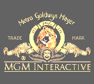 | 007 - The World Is Not Enough (USA, Europe) GBC · Game Boy Color | MBC5 | 2048/— | solo GBC | intérprete | ||||
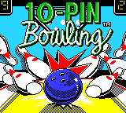 | 10-Pin Bowling (USA) (Rumble Version) GBC · Game Boy Color | MBC5 | 1024/— | solo GBC, vibración | recompilado | 1.7% · 48 fn | 98.88% | 19× / 18× | |
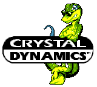 | 102 Dalmatians - Puppies to the Rescue (USA, Europe) GBC · Game Boy Color | MBC5 | 1024/— | solo GBC | intérprete | ||||
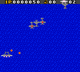 | 1942 (USA, Europe) GBC · Game Boy Color | MBC5 | 1024/— | solo GBC | intérprete | ||||
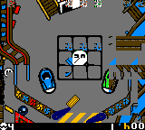 | 3-D Ultra Pinball - Thrillride (USA) (Rumble Version) GBC · Game Boy Color | MBC5 | 512/8 | solo GBC, batería, vibración | recompilado | 5.0% · 76 fn | 76.66% | 15× / 16× | |
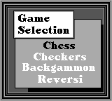 | 4-in-1 Fun Pak (USA, Europe) GB · Game Boy | MBC1 | 128/— | recompilado | 14.1% · 38 fn | 99.47% | 23× / 22× | ||
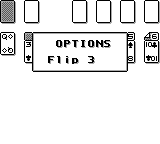 | 4-in-1 Funpak - Volume II (USA, Europe) GB · Game Boy | MBC1 | 128/— | intérprete | |||||
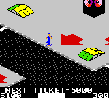 | 720 Degrees (USA, Europe) (GB Compatible) GBC · Game Boy Color | MBC5 | 1024/— | GBC + GB | recompilado | 3.6% · 53 fn | 99.53% | 15× / 15× | |
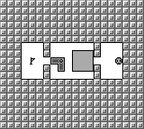 | A-mazing Tater (USA) GB · Game Boy | MBC1 | 64/— | recompilado | 24.5% · 21 fn | 98.83% | 20× / 19× | ||
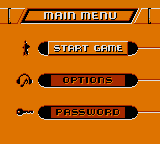 | Action Man - Search for Base X (USA, Europe) GBC · Game Boy Color | MBC5 | 1024/— | solo GBC | intérprete | ||||
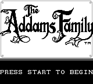 | Addams Family, The (USA) GB · Game Boy | MBC1 | 128/— | intérprete | |||||
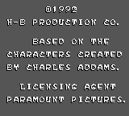 | Addams Family, The - Pugsley's Scavenger Hunt (USA, Europe) GB · Game Boy | MBC1 | 128/— | intérprete | |||||
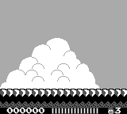 | Adventure Island (USA, Europe) GB · Game Boy | MBC1 | 128/— | intérprete | |||||
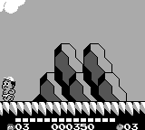 | Adventure Island II - Aliens in Paradise (USA, Europe) GB · Game Boy | MBC1 | 256/— | recompilado | 11.2% · 60 fn | 96.42% | 21× / 18× | ||
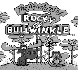 | Adventures of Rocky and Bullwinkle and Friends, The (USA) GB · Game Boy | MBC1 | 128/— | intérprete | |||||
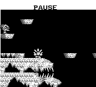 | Adventures of Star Saver, The (USA, Europe) GB · Game Boy | MBC1 | 128/— | intérprete | |||||
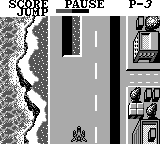 | Aerostar (USA, Europe) GB · Game Boy | MBC1 | 128/— | intérprete | |||||
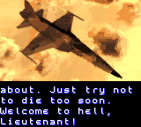 | AirForce Delta (USA) GBC · Game Boy Color | MBC5 | 1024/— | solo GBC | intérprete | ||||
| Aladdin (USA) GBC · Game Boy Color | MBC5 | 1024/— | solo GBC | pantalla en blanco | |||||
| Aladdin (USA) (SGB Enhanced) GB · Super Game Boy | MBC1 | 256/— | SGB | recompilado | 10.4% · 45 fn | 98.47% | 17× / 17× | ||
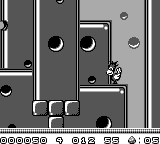 | Alfred Chicken (USA) GB · Game Boy | MBC1 | 128/— | intérprete | |||||
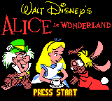 | Alice in Wonderland (USA, Australia) GBC · Game Boy Color | MBC5 | 2048/8 | solo GBC, batería | intérprete | ||||
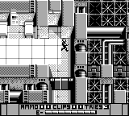 | Alien 3 (USA, Europe) GB · Game Boy | MBC1 | 128/— | intérprete | |||||
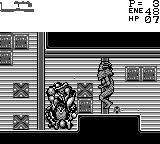 | Alien vs Predator - The Last of His Clan (USA) GB · Game Boy | MBC1 | 128/— | intérprete | |||||
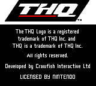 | Aliens - Thanatos Encounter (USA, Europe) GBC · Game Boy Color | MBC5 | 1024/— | solo GBC | intérprete | ||||
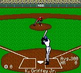 | All-Star Baseball 2000 (USA, Europe) GBC · Game Boy Color | MBC5 | 1024/— | solo GBC | intérprete | ||||
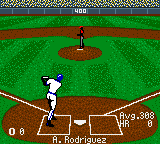 | All-Star Baseball 2001 (USA) GBC · Game Boy Color | MBC5 | 1024/— | solo GBC | intérprete | ||||
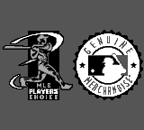 | All-Star Baseball 99 (USA) GB · Game Boy | MBC1 | 512/— | recompilado | 5.2% · 63 fn | 99.31% | 24× / 25× | ||
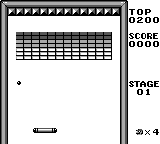 | Alleyway (World) GB · Game Boy | ROM | 32/— | recompilado | 27.0% · 15 fn | 92.50% | 20× / 20× | ||
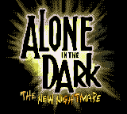 | Alone in the Dark - The New Nightmare (USA) (En,Fr,Es) GBC · Game Boy Color | MBC5 | 4096/8 | solo GBC, batería | intérprete | ||||
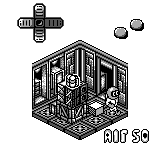 | Altered Space - A 3-D Alien Adventure (USA) GB · Game Boy | MBC1 | 128/— | intérprete | |||||
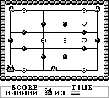 | Amazing Penguin (USA, Europe) GB · Game Boy | MBC1 | 64/— | intérprete | |||||
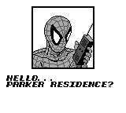 | Amazing Spider-Man, The (USA, Europe) GB · Game Boy | MBC1 | 64/— | intérprete | |||||
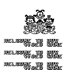 | Animaniacs (USA) (SGB Enhanced) GB · Super Game Boy | MBC1 | 256/— | SGB | intérprete | ||||
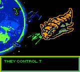 | Animorphs (USA) GBC · Game Boy Color | MBC5 | 1024/— | solo GBC | intérprete | ||||
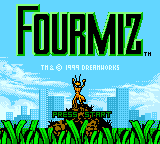 | Antz (USA) (En,Fr,Es) (GB Compatible) GBC · Game Boy Color | MBC5 | 1024/— | GBC + GB | intérprete | ||||
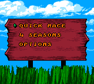 | Antz Racing (USA) (En,Fr,De,Es,It,Nl) GBC · Game Boy Color | MBC5 | 1024/— | solo GBC | intérprete | ||||
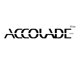 | Arcade Classic No. 1 - Asteroids & Missile Command (USA, Europe) (SGB Enhanced) GB · Super Game Boy | MBC1 | 128/— | SGB | recompilado | 15.5% · 42 fn | 98.97% | 18× / 17× | |
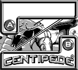 | Arcade Classic No. 2 - Centipede & Millipede (USA, Europe) (SGB Enhanced) GB · Super Game Boy | MBC1 | 128/— | SGB | intérprete | ||||
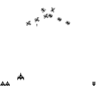 | Arcade Classic No. 3 - Galaga & Galaxian (USA) (SGB Enhanced) GB · Super Game Boy | MBC1 | 128/— | SGB | intérprete | ||||
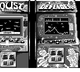 | Arcade Classic No. 4 - Defender & Joust (USA, Europe) (SGB Enhanced) GB · Super Game Boy | MBC1 | 128/— | SGB | intérprete | ||||
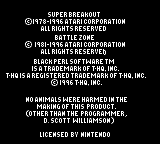 | Arcade Classics - Super Breakout & Battlezone (USA, Europe) (SGB Enhanced) GB · Super Game Boy | MBC1 | 256/— | SGB | intérprete | ||||
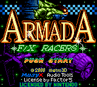 | Armada - FX Racers (USA) GBC · Game Boy Color | MBC5 | 1024/8 | solo GBC, batería | recompilado | 5.1% · 89 fn | 98.27% | 15× / 14× | |
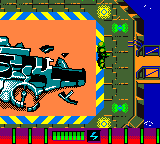 | Armorines - Project S.W.A.R.M. (USA, Europe) (En,De) GBC · Game Boy Color | MBC5 | 1024/— | solo GBC | intérprete | ||||
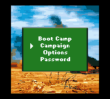 | Army Men (USA, Europe) (En,Fr,De) GBC · Game Boy Color | MBC5 | 1024/— | solo GBC | intérprete | ||||
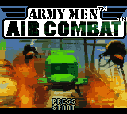 | Army Men - Air Combat (USA, Europe) (En,Fr,De) GBC · Game Boy Color | MBC5 | 1024/— | solo GBC | intérprete | ||||
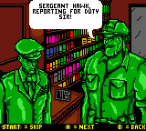 | Army Men - Sarge's Heroes 2 (USA, Europe) (En,Fr,De) GBC · Game Boy Color | MBC5 | 1024/— | solo GBC | intérprete | ||||
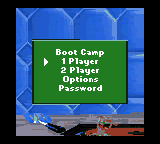 | Army Men 2 (USA, Europe) (En,Fr,De) GBC · Game Boy Color | MBC5 | 1024/— | solo GBC | intérprete | ||||
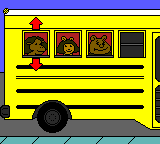 | Arthur's Absolutely Fun Day! (USA) GBC · Game Boy Color | MBC5 | 1024/— | solo GBC | intérprete | ||||
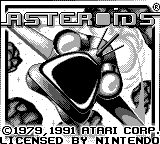 | Asteroids (USA, Europe) GB · Game Boy | ROM | 32/— | recompilado | 22.9% · 26 fn | 99.06% | 21× / 21× | ||
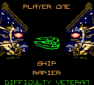 | Asteroids (USA, Europe) (GB Compatible) GBC · Game Boy Color | MBC5 | 1024/— | GBC + GB | intérprete | ||||
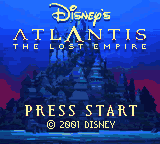 | Atlantis - The Lost Empire (USA, Europe) GBC · Game Boy Color | MBC5 | 2048/— | solo GBC | intérprete | ||||
| Atomic Punk (USA) GB · Game Boy | MBC1 | 128/— | intérprete | ||||||
| Attack of the Killer Tomatoes (USA, Europe) GB · Game Boy | MBC1 | 128/— | intérprete | ||||||
| Austin Powers - Oh, Behave! (USA) GBC · Game Boy Color | MBC5 | 4096/8 | solo GBC, batería | intérprete | |||||
| Austin Powers - Welcome to My Underground Lair! (USA) GBC · Game Boy Color | MBC5 | 4096/8 | solo GBC, batería | intérprete | |||||
| Avenging Spirit (USA, Europe) GB · Game Boy | MBC1 | 256/— | intérprete | ||||||
| Azure Dreams (USA) (SGB Enhanced) (GB Compatible) GBC · Game Boy Color | MBC5 | 1024/8 | GBC + GB, SGB, batería | intérprete | |||||
| Babe and Friends (USA) (GB Compatible) GBC · Game Boy Color | MBC5 | 1024/— | GBC + GB | intérprete | |||||
| Ballistic (USA) (GB Compatible) GBC · Game Boy Color | MBC5 | 512/— | GBC + GB | recompilado | 10.5% · 80 fn | 97.84% | 15× / 15× | ||
| Balloon Kid (USA, Europe) GB · Game Boy | MBC1 | 128/— | intérprete | ||||||
| Barbie - Fashion Pack Games (USA, Europe) (GB Compatible) GBC · Game Boy Color | MBC5 | 1024/— | GBC + GB | intérprete | |||||
| Barbie - Game Girl (USA, Europe) GB · Game Boy | MBC1 | 128/— | intérprete | ||||||
| Barbie - Magic Genie Adventure (USA) GBC · Game Boy Color | MBC5 | 1024/— | solo GBC | intérprete | |||||
| Barbie - Ocean Discovery (USA) (GB Compatible) GBC · Game Boy Color | MBC5 | 1024/— | GBC + GB | intérprete | |||||
| Barbie - Pet Rescue (USA) GBC · Game Boy Color | MBC5 | 1024/— | solo GBC | intérprete | |||||
| Bart Simpson's Escape from Camp Deadly (USA, Europe) GB · Game Boy | MBC1 | 128/— | intérprete | ||||||
| Baseball (World) GB · Game Boy | MBC1 | 64/— | intérprete | ||||||
| Bases Loaded (USA) GB · Game Boy | MBC1 | 128/— | intérprete | ||||||
| Bass Masters Classic (USA, Europe) (GB Compatible) GBC · Game Boy Color | MBC5 | 1024/— | GBC + GB | intérprete | |||||
| Batman - Chaos in Gotham (USA) GBC · Game Boy Color | MBC5 | 1024/— | solo GBC | intérprete | |||||
| Batman - Return of the Joker (USA, Europe) GB · Game Boy | MBC1 | 128/— | intérprete | ||||||
| Batman - The Animated Series (USA, Europe) GB · Game Boy | MBC1 | 128/— | intérprete | ||||||
 | Batman - The Video Game (World) GB · Game Boy | MBC1 | 128/— | pantalla en blanco | |||||
| Batman Beyond - Return of the Joker (USA) GBC · Game Boy Color | MBC5 | 1024/— | solo GBC | intérprete | |||||
| Batman Forever (USA, Europe) GB · Game Boy | MBC1 | 256/— | intérprete | ||||||
| Battle Arena Toshinden (USA) (SGB Enhanced) GB · Super Game Boy | MBC1 | 512/— | SGB | intérprete | |||||
| Battle Bull (USA) GB · Game Boy | MBC1 | 128/— | intérprete | ||||||
| Battle Unit Zeoth (USA, Europe) GB · Game Boy | MBC1 | 128/— | intérprete | ||||||
| Battleship (USA, Europe) GB · Game Boy | MBC1 | 64/— | intérprete | ||||||
| Battleship (USA, Europe) (GB Compatible) GBC · Game Boy Color | MBC5 | 1024/— | GBC + GB | intérprete | |||||
| BattleTanx (USA) GBC · Game Boy Color | MBC5 | 1024/— | solo GBC | intérprete | |||||
| Battletoads (USA, Europe) GB · Game Boy | MBC1 | 128/— | intérprete | ||||||
| Battletoads in Ragnarok's World (USA) GB · Game Boy | MBC1 | 128/— | intérprete | ||||||
| Battletoads-Double Dragon (USA) GB · Game Boy | MBC1 | 256/— | intérprete | ||||||
| Beauty and the Beast - A Board Game Adventure (USA, Australia) (SGB Enhanced) (GB Compatible) GBC · Game Boy Color | MBC5 | 1024/8 | GBC + GB, SGB, batería | intérprete | |||||
| Beavis and Butt-head (USA, Europe) GB · Game Boy | MBC1 | 512/— | intérprete | ||||||
| Beetlejuice (USA) GB · Game Boy | MBC1 | 128/— | intérprete | ||||||
| Best of the Best - Championship Karate (USA) GB · Game Boy | MBC1 | 256/— | intérprete | ||||||
| Bill & Ted's Excellent Game Boy Adventure - A Bogus Journey! (USA, Europe) GB · Game Boy | MBC1 | 128/— | intérprete | ||||||
| Bill Elliott's NASCAR Fast Tracks (USA) GB · Game Boy | MBC1 | 128/— | intérprete | ||||||
| Billy Bob's Huntin' 'n' Fishin' (USA, Europe) GBC · Game Boy Color | MBC5 | 1024/— | solo GBC | intérprete | |||||
| Bionic Battler (USA) GB · Game Boy | MBC1 | 64/— | intérprete | ||||||
| Bionic Commando (USA) GB · Game Boy | MBC1 | 256/— | intérprete | ||||||
| Bionic Commando - Elite Forces (USA, Australia) GBC · Game Boy Color | MBC5 | 2048/8 | solo GBC, batería | intérprete | |||||
| Black Bass - Lure Fishing (USA) GB · Game Boy | MBC1 | 256/— | intérprete | ||||||
| Black Bass - Lure Fishing (USA, Europe) (GB Compatible) GBC · Game Boy Color | MBC5 | 1024/— | GBC + GB | intérprete | |||||
| Blade (USA, Europe) GBC · Game Boy Color | MBC5 | 1024/— | solo GBC | intérprete | |||||
| Blades of Steel (USA) GB · Game Boy | MBC1 | 128/— | intérprete | ||||||
| Blaster Master - Enemy Below (USA, Europe) (SGB Enhanced) (GB Compatible) GBC · Game Boy Color | MBC5 | 1024/— | GBC + GB, SGB | intérprete | |||||
| Blaster Master Boy (USA) GB · Game Boy | MBC1 | 128/— | intérprete | ||||||
| Blue's Clues - Blue's Alphabet Book (USA) GBC · Game Boy Color | MBC5 | 1024/— | solo GBC | intérprete | |||||
| Blues Brothers, The (USA, Europe) GB · Game Boy | MBC1 | 128/— | intérprete | ||||||
| Bo Jackson - Two Games in One (USA) GB · Game Boy | MBC1 | 128/— | intérprete | ||||||
| Boarder Zone (USA) GBC · Game Boy Color | MBC5 | 2048/— | solo GBC | se cuelga | opcode ilegal antes del cuadro 900 | ||||
| Bob the Builder - Fix it Fun! (USA) GBC · Game Boy Color | MBC5 | 1024/— | solo GBC | intérprete | |||||
| Boggle Plus (USA) GB · Game Boy | MBC1 | 128/— | intérprete | ||||||
| Bomberman GB (USA, Europe) (SGB Enhanced) GB · Super Game Boy | MBC1 | 256/— | SGB | intérprete | |||||
| Bomberman Max - Blue Champion (USA) GBC · Game Boy Color | MBC5 | 2048/8 | solo GBC, batería | intérprete | |||||
| Bomberman Max - Red Challenger (USA) GBC · Game Boy Color | MBC5 | 2048/8 | solo GBC, batería | intérprete | |||||
| Bomberman Quest (USA) (SGB Enhanced) (GB Compatible) GBC · Game Boy Color | MBC5 | 1024/8 | GBC + GB, SGB, batería | intérprete | |||||
| Bonk's Adventure (USA) GB · Game Boy | MBC1 | 256/— | intérprete | ||||||
| Bonk's Revenge (USA) (SGB Enhanced) GB · Super Game Boy | MBC1 | 256/— | SGB | intérprete | |||||
| Boomer's Adventure in ASMIK World (USA) GB · Game Boy | MBC1 | 64/— | intérprete | ||||||
| Boxxle (USA) GB · Game Boy | ROM | 32/— | recompilado | 32.4% · 8 fn | 96.01% | 22× / 21× | |||
| Boxxle II (USA, Europe) GB · Game Boy | ROM | 32/— | intérprete | ||||||
| Brain Bender (USA) GB · Game Boy | ROM | 32/— | intérprete | ||||||
| Brain Drain (USA) (SGB Enhanced) GB · Super Game Boy | MBC1 | 128/— | SGB | intérprete | |||||
| Bram Stoker's Dracula (USA, Europe) GB · Game Boy | MBC1 | 128/— | intérprete | ||||||
| BreakThru! (USA) GB · Game Boy | MBC1 | 128/— | intérprete | ||||||
| Bubble Bobble (USA, Europe) GB · Game Boy | MBC1 | 128/— | intérprete | ||||||
| Bubble Bobble Part 2 (USA, Europe) GB · Game Boy | MBC1 | 128/— | intérprete | ||||||
| Bubble Ghost (USA, Europe) GB · Game Boy | ROM | 32/— | intérprete | ||||||
| Bubsy II (USA) GB · Game Boy | MBC1 | 256/— | intérprete | ||||||
| Buffy the Vampire Slayer (USA, Europe) GBC · Game Boy Color | MBC5 | 1024/— | solo GBC | intérprete | |||||
| Bug's Life, A (USA) (SGB Enhanced) (GB Compatible) GBC · Game Boy Color | MBC5 | 1024/— | GBC + GB, SGB | intérprete | |||||
| Bugs Bunny - Crazy Castle 3 (USA, Europe) (GB Compatible) GBC · Game Boy Color | MBC5 | 1024/— | GBC + GB | intérprete | |||||
| Bugs Bunny Crazy Castle 2, The (USA) GB · Game Boy | MBC1 | 128/— | intérprete | ||||||
| Bugs Bunny Crazy Castle, The (USA, Europe) GB · Game Boy | MBC1 | 64/— | intérprete | ||||||
| Bugs Bunny in - Crazy Castle 4 (USA) GBC · Game Boy Color | MBC5 | 1024/— | solo GBC | intérprete | |||||
| Burai Fighter Deluxe (USA, Europe) GB · Game Boy | MBC1 | 64/— | intérprete | ||||||
| BurgerTime Deluxe (World) GB · Game Boy | MBC1 | 64/— | intérprete | ||||||
| Bust-A-Move 2 - Arcade Edition (USA, Europe) GB · Game Boy | MBC1 | 128/— | intérprete | ||||||
| Bust-A-Move 4 (USA, Europe) (GB Compatible) GBC · Game Boy Color | MBC5 | 512/— | GBC + GB | intérprete | |||||
| Bust-A-Move Millennium (USA, Europe) GBC · Game Boy Color | MBC5 | 1024/— | solo GBC | intérprete | |||||
| Buster Bros. (USA) GB · Game Boy | MBC1 | 128/— | intérprete | ||||||
| Buzz Lightyear of Star Command (USA, Europe) GBC · Game Boy Color | MBC5 | 512/— | solo GBC | recompilado | 2.6% · 26 fn | 98.86% | 16× / 16× | ||
| Caesars Palace (USA) GB · Game Boy | MBC1 | 128/— | intérprete | ||||||
| Caesars Palace II (USA, Europe) GBC · Game Boy Color | MBC5 | 1024/8 | solo GBC, batería | intérprete | |||||
| Cannon Fodder (USA) (En,Fr,De,Es,It) GBC · Game Boy Color | MBC5 | 4096/8 | solo GBC, batería | intérprete | |||||
| Captain America and the Avengers (USA) GB · Game Boy | MBC1 | 128/— | intérprete | ||||||
| Carmageddon - Carpocalypse Now (USA, Europe) (En,Fr,Es,It) GBC · Game Boy Color | MBC5 | 2048/— | solo GBC | intérprete | |||||
| Casino FunPak (USA, Europe) GB · Game Boy | MBC1 | 128/— | intérprete | ||||||
| Casper (USA) GB · Game Boy | MBC1 | 128/— | intérprete | ||||||
| Casper (USA) GBC · Game Boy Color | MBC5 | 1024/8 | solo GBC, batería | intérprete | |||||
| Castelian (USA) GB · Game Boy | ROM | 32/— | intérprete | ||||||
| Castlevania - The Adventure (USA) GB · Game Boy | MBC1 | 64/— | intérprete | ||||||
| Castlevania II - Belmont's Revenge (USA, Europe) GB · Game Boy | MBC1 | 128/— | intérprete | ||||||
| Castlevania Legends (USA, Europe) (SGB Enhanced) GB · Super Game Boy | MBC1 | 256/— | SGB | intérprete | |||||
| Caterpillar Construction Zone (USA, Europe) (GB Compatible) GBC · Game Boy Color | MBC5 | 1024/— | GBC + GB | intérprete | |||||
| Catrap (USA) GB · Game Boy | ROM | 32/— | intérprete | ||||||
| Catwoman (USA) GBC · Game Boy Color | MBC5 | 1024/— | solo GBC | intérprete | |||||
| Catz (USA) GBC · Game Boy Color | MBC5 | 1024/8 | solo GBC, batería | intérprete | |||||
| Centipede (USA) (GB Compatible) GBC · Game Boy Color | MBC5 | 1024/— | GBC + GB | intérprete | |||||
| Championship Motocross 2001 featuring Ricky Carmichael (USA, Europe) GBC · Game Boy Color | MBC5 | 1024/— | solo GBC | intérprete | |||||
| Championship Pool (USA) GB · Game Boy | MBC1 | 128/— | intérprete | ||||||
| Chase H.Q. (USA, Europe) GB · Game Boy | MBC1 | 128/— | intérprete | ||||||
| Chase H.Q. - Secret Police (USA) (SGB Enhanced) (GB Compatible) GBC · Game Boy Color | MBC5 | 1024/— | GBC + GB, SGB | intérprete | |||||
| Chessmaster (USA, Europe) (GB Compatible) GBC · Game Boy Color | MBC5 | 1024/— | GBC + GB | intérprete | |||||
| Chessmaster, The (USA, Europe) GB · Game Boy | MBC1 | 64/— | intérprete | ||||||
| Chicken Run (USA, Europe) (En,Fr,De,Es,It) GBC · Game Boy Color | MBC5 | 1024/— | solo GBC | intérprete | |||||
| Choplifter II - Rescue & Survive (USA) GB · Game Boy | MBC1 | 128/— | intérprete | ||||||
| Chuck Rock (USA, Europe) GB · Game Boy | MBC1 | 128/— | intérprete | ||||||
| Classic Bubble Bobble (USA) (SGB Enhanced) (GB Compatible) GBC · Game Boy Color | MBC5 | 1024/— | GBC + GB, SGB | intérprete | |||||
| Cliffhanger (USA, Europe) GB · Game Boy | MBC1 | 128/— | intérprete | ||||||
| College Slam (USA) GB · Game Boy | MBC1 | 512/— | intérprete | ||||||
| Commander Keen (USA, Europe) GBC · Game Boy Color | MBC5 | 1024/— | solo GBC | intérprete | |||||
| Conker's Pocket Tales (USA, Europe) (En,Fr,De) (SGB Enhanced) (GB Compatible) GBC · Game Boy Color | MBC5 | 2048/8 | GBC + GB, SGB, batería | intérprete | |||||
| Contra - The Alien Wars (USA) (SGB Enhanced) GB · Super Game Boy | MBC1 | 128/— | SGB | intérprete | |||||
| Cool Ball (USA) GB · Game Boy | ROM | 32/— | intérprete | ||||||
| Cool Spot (USA) GB · Game Boy | MBC1 | 128/— | intérprete | ||||||
| Cool World (USA, Europe) GB · Game Boy | MBC1 | 128/— | intérprete | ||||||
| Cosmo Tank (USA) GB · Game Boy | MBC1 | 128/— | intérprete | ||||||
| Croc (USA, Europe) GBC · Game Boy Color | MBC5 | 1024/— | solo GBC | intérprete | |||||
| Croc 2 (USA, Europe) GBC · Game Boy Color | MBC5 | 1024/— | solo GBC | intérprete | |||||
| Cruis'n Exotica (USA) GBC · Game Boy Color | MBC5 | 2048/— | solo GBC | intérprete | |||||
| Crystal Quest (USA) GB · Game Boy | ROM | 32/— | intérprete | ||||||
| Crystalis (USA) GBC · Game Boy Color | MBC5 | 2048/8 | solo GBC, batería | intérprete | |||||
| Cubix - Robots for Everyone - Race 'n Robots (USA) (En,Fr,De,Es,It) GBC · Game Boy Color | MBC5 | 1024/— | solo GBC | intérprete | |||||
| CutThroat Island (USA, Europe) GB · Game Boy | MBC1 | 256/— | intérprete | ||||||
| CyberTiger (USA, Europe) GBC · Game Boy Color | MBC5 | 1024/— | solo GBC | intérprete | |||||
| Cyraid (USA) GB · Game Boy | MBC1 | 64/— | intérprete | ||||||
| Daedalian Opus (USA) GB · Game Boy | ROM | 32/— | intérprete | ||||||
| Daffy Duck (USA, Europe) (SGB Enhanced) GB · Super Game Boy | MBC1 | 256/— | SGB | intérprete | |||||
| Daffy Duck - Fowl Play (USA, Europe) (GB Compatible) GBC · Game Boy Color | MBC5 | 1024/— | GBC + GB | intérprete | |||||
| Darkman (USA, Europe) GB · Game Boy | MBC1 | 128/— | intérprete | ||||||
| Darkwing Duck (USA) GB · Game Boy | MBC1 | 128/— | intérprete | ||||||
| Dave Mirra Freestyle BMX (USA, Europe) GBC · Game Boy Color | MBC5 | 1024/— | solo GBC | intérprete | |||||
| David Crane's The Rescue of Princess Blobette (USA) GB · Game Boy | MBC1 | 64/— | intérprete | ||||||
| Days of Thunder (USA, Europe) GB · Game Boy | MBC1 | 128/— | intérprete | ||||||
| Dead Heat Scramble (USA) GB · Game Boy | MBC1 | 64/— | intérprete | ||||||
| Deer Hunter (USA) GBC · Game Boy Color | MBC5 | 1024/— | solo GBC | intérprete | |||||
| Deja Vu I & II - The Casebooks of Ace Harding (USA) GBC · Game Boy Color | MBC5 | 1024/8 | solo GBC, batería | intérprete | |||||
| Dennis the Menace (USA) GB · Game Boy | MBC1 | 128/— | intérprete | ||||||
| Desert Strike - Return to the Gulf (USA) (SGB Enhanced) GB · Super Game Boy | MBC1 | 256/— | SGB | intérprete | |||||
| Dexter's Laboratory - Robot Rampage (USA, Europe) GBC · Game Boy Color | MBC5 | 1024/— | solo GBC | intérprete | |||||
| Dexterity (USA, Europe) GB · Game Boy | MBC1 | 64/— | intérprete | ||||||
| Dick Tracy (USA) GB · Game Boy | MBC1 | 128/— | intérprete | ||||||
| Dig Dug (USA) GB · Game Boy | MBC1 | 128/— | intérprete | ||||||
| Dinosaur (USA) GBC · Game Boy Color | MBC5 | 2048/8 | solo GBC, batería | intérprete | |||||
| Diva Starz - Mall Mania (USA) GBC · Game Boy Color | MBC5 | 1024/— | solo GBC | intérprete | |||||
| Dogz (USA) GBC · Game Boy Color | MBC5 | 1024/8 | solo GBC, batería | intérprete | |||||
| Donald Duck - Goin' Quackers (USA) (En,Fr,De,Es,It) GBC · Game Boy Color | MBC5 | 4096/— | solo GBC | intérprete | |||||
| Donkey Kong (Japan, USA) (En) (SGB Enhanced) GB · Super Game Boy | MBC1 | 512/8 | SGB, batería | intérprete | |||||
| Donkey Kong Country (USA, Europe) (En,Fr,De,Es,It) GBC · Game Boy Color | MBC5 | 4096/8 | solo GBC, batería | intérprete | |||||
| Donkey Kong Land (USA, Europe) (SGB Enhanced) GB · Super Game Boy | MBC1 | 512/8 | SGB, batería | intérprete | |||||
| Donkey Kong Land 2 (USA, Europe) (SGB Enhanced) GB · Super Game Boy | MBC1 | 512/8 | SGB, batería | intérprete | |||||
| Donkey Kong Land III (USA, Europe) (SGB Enhanced) GB · Super Game Boy | MBC1 | 512/8 | SGB, batería | intérprete | |||||
| Double Dragon (USA, Europe) GB · Game Boy | MBC1 | 128/— | intérprete | ||||||
| Double Dragon 3 - The Arcade Game (USA, Europe) GB · Game Boy | MBC1 | 128/— | intérprete | ||||||
| Double Dragon II (USA, Europe) GB · Game Boy | MBC1 | 128/— | intérprete | ||||||
| Double Dribble - 5 on 5 (USA) GB · Game Boy | MBC1 | 128/— | intérprete | ||||||
| Doug's Big Game (USA) GBC · Game Boy Color | MBC5 | 1024/— | solo GBC | intérprete | |||||
| Dr. Franken (USA) GB · Game Boy | MBC1 | 128/— | intérprete | ||||||
| Dr. Franken II (USA, Europe) (En,Fr,De,Es,It,Nl,Sv) GB · Game Boy | MBC1 | 256/— | intérprete | ||||||
| Dr. Mario (World) GB · Game Boy | ROM | 32/— | intérprete | ||||||
| Dracula - Crazy Vampire (USA) GBC · Game Boy Color | MBC5 | 1024/— | solo GBC | intérprete | |||||
| Dragon Ball Z - Legendary Super Warriors (USA) GBC · Game Boy Color | MBC5 | 2048/8 | solo GBC, batería | intérprete | |||||
| Dragon Dance (USA) (SGB Enhanced) (GB Compatible) GBC · Game Boy Color | MBC5 | 256/— | GBC + GB, SGB | recompilado | 8.4% · 30 fn | 99.48% | 19× / 18× | ||
| Dragon Tales - Dragon Adventures (USA) GBC · Game Boy Color | MBC5 | 1024/— | solo GBC | intérprete | |||||
| Dragon Tales - Dragon Wings (USA) GBC · Game Boy Color | MBC5 | 1024/8 | solo GBC, batería | intérprete | |||||
| Dragon Warrior I & II (USA) (SGB Enhanced) (GB Compatible) GBC · Game Boy Color | MBC5 | 2048/8 | GBC + GB, SGB, batería | intérprete | |||||
| Dragon Warrior III (USA) GBC · Game Boy Color | MBC5 | 4096/32 | solo GBC, batería | intérprete | |||||
| Dragon Warrior Monsters (USA, Europe) (SGB Enhanced) (GB Compatible) GBC · Game Boy Color | MBC5 | 2048/8 | GBC + GB, SGB, batería | intérprete | |||||
| Dragon Warrior Monsters 2 - Cobi's Journey (USA) (SGB Enhanced) (GB Compatible) GBC · Game Boy Color | MBC5 | 4096/32 | GBC + GB, SGB, batería | intérprete | |||||
| Dragon Warrior Monsters 2 - Tara's Adventure (USA) (SGB Enhanced) (GB Compatible) GBC · Game Boy Color | MBC5 | 4096/32 | GBC + GB, SGB, batería | intérprete | |||||
| Dragon's Lair (USA, Europe) (En,Ja,Fr,De,Es,Zh) GBC · Game Boy Color | MBC5 | 4096/— | solo GBC | intérprete | |||||
| Dragon's Lair - The Legend (USA) GB · Game Boy | MBC1 | 128/— | intérprete | ||||||
| DragonHeart (USA, Europe) GB · Game Boy | MBC1 | 512/— | intérprete | ||||||
| Driver - You Are the Wheelman (USA) (En,Fr,De,Es,It) GBC · Game Boy Color | MBC5 | 1024/— | solo GBC | intérprete | |||||
| DuckTales (USA) GB · Game Boy | MBC1 | 64/— | intérprete | ||||||
| DuckTales 2 (USA) GB · Game Boy | MBC1 | 128/— | intérprete | ||||||
| Duke Nukem (USA) (En,Fr,De,Es,It) GBC · Game Boy Color | MBC5 | 1024/8 | solo GBC, batería | intérprete | |||||
| Dukes of Hazzard, The - Racing for Home (USA) GBC · Game Boy Color | MBC5 | 2048/8 | solo GBC, batería | intérprete | |||||
| E.T. - The Extra-Terrestrial - Digital Companion (USA) GBC · Game Boy Color | MBC3 | 1024/8 | solo GBC, batería, reloj | recompilado | 1.5% · 84 fn | 96.98% | 24× / 23× | ||
| E.T. - The Extra-Terrestrial - Escape from Planet Earth (USA) GBC · Game Boy Color | MBC5 | 1024/8 | solo GBC, batería | intérprete | |||||
| E.T. - The Extra-Terrestrial and the Cosmic Garden (USA) GBC · Game Boy Color | MBC5 | 1024/8 | solo GBC, batería | intérprete | |||||
| Earthworm Jim (USA) GB · Game Boy | MBC1 | 256/— | intérprete | ||||||
| Earthworm Jim - Menace 2 the Galaxy (USA, Europe) (GB Compatible) GBC · Game Boy Color | MBC5 | 1024/— | GBC + GB | intérprete | |||||
| ECW Hardcore Revolution (USA, Europe) GBC · Game Boy Color | MBC5 | 1024/— | solo GBC | intérprete | |||||
| Elevator Action (USA, Europe) GB · Game Boy | MBC1 | 64/— | intérprete | ||||||
| Elite Soccer (USA) (SGB Enhanced) GB · Super Game Boy | MBC1 | 128/— | SGB | intérprete | |||||
| Emperor's New Groove, The (USA) GBC · Game Boy Color | MBC5 | 2048/8 | solo GBC, batería | intérprete | |||||
| ESPN International Track & Field (USA) GBC · Game Boy Color | MBC5 | 1024/8 | solo GBC, batería | intérprete | |||||
| ESPN National Hockey Night (USA) GBC · Game Boy Color | MBC5 | 2048/8 | solo GBC, batería | intérprete | |||||
| Evel Knievel (USA) (GB Compatible) GBC · Game Boy Color | MBC5 | 2048/— | GBC + GB | intérprete | |||||
| Extra Bases (USA) GB · Game Boy | MBC1 | 128/— | intérprete | ||||||
| Extreme Sports with the Berenstain Bears (USA, Europe) (En,Fr,De,Es,It) GBC · Game Boy Color | MBC5 | 1024/— | solo GBC | intérprete | |||||
| F-1 Race (World) GB · Game Boy | MBC2 | 128/0.5 | batería | recompilado | 17.1% · 33 fn | 98.63% | 21× / 21× | ||
| F-15 Strike Eagle (USA, Europe) GB · Game Boy | MBC1 | 128/— | intérprete | ||||||
| F-18 Thunder Strike (USA, Europe) GBC · Game Boy Color | MBC5 | 1024/— | solo GBC | intérprete | |||||
| F1 Pole Position (USA, Europe) GB · Game Boy | MBC1 | 256/— | intérprete | ||||||
| F1 World Grand Prix II for Game Boy Color (USA) (En,Fr,De,Es) GBC · Game Boy Color | MBC5 | 1024/8 | solo GBC, batería | intérprete | |||||
| Faceball 2000 (USA) GB · Game Boy | MBC1 | 128/— | intérprete | ||||||
| Fastest Lap (USA) GB · Game Boy | MBC2 | 128/0.5 | batería | intérprete | |||||
| Felix the Cat (USA, Europe) GB · Game Boy | MBC1 | 128/— | intérprete | ||||||
| Ferrari Grand Prix Challenge (USA, Europe) GB · Game Boy | MBC1 | 128/— | intérprete | ||||||
| Fidgetts, The (USA, Europe) (En,Fr,De,Es,It,Nl,Sv) GB · Game Boy | MBC1 | 256/— | intérprete | ||||||
| FIFA 2000 (USA, Europe) (SGB Enhanced) (GB Compatible) GBC · Game Boy Color | MBC5 | 1024/— | GBC + GB, SGB | intérprete | |||||
| FIFA International Soccer (USA, Europe) (En,Fr,De,Es) (SGB Enhanced) GB · Super Game Boy | MBC1 | 512/— | SGB | intérprete | |||||
| FIFA Soccer 96 (USA, Europe) (En,Fr,De,Es) (SGB Enhanced) GB · Super Game Boy | MBC1 | 512/— | SGB | intérprete | |||||
| FIFA Soccer 97 (USA, Europe) (SGB Enhanced) GB · Super Game Boy | MBC1 | 512/— | SGB | intérprete | |||||
| Fighting Simulator 2 in 1 - Flying Warriors (USA, Europe) GB · Game Boy | MBC1 | 128/— | intérprete | ||||||
| Final Fantasy Adventure (USA) GB · Game Boy | MBC2 | 256/0.5 | batería | recompilado | 10.7% · 83 fn | 96.12% | 22× / 21× | ||
| Final Fantasy Legend II (USA) GB · Game Boy | MBC1 | 256/8 | batería | recompilado | 10.8% · 31 fn | 99.52% | 19× / 18× | ||
| Final Fantasy Legend III (USA) GB · Game Boy | MBC1 | 256/8 | batería | intérprete | |||||
| Final Fantasy Legend, The (USA) GB · Game Boy | MBC2 | 128/0.5 | batería | intérprete | |||||
| Fish Dude (USA) GB · Game Boy | MBC1 | 64/— | intérprete | ||||||
| Fist of the North Star (USA) GB · Game Boy | MBC1 | 128/— | intérprete | ||||||
| Flash, The (USA, Europe) GB · Game Boy | MBC1 | 128/— | intérprete | ||||||
| Flintstones, The (USA, Europe) GB · Game Boy | MBC1 | 256/— | intérprete | ||||||
| Flintstones, The - Burgertime in Bedrock (USA) GBC · Game Boy Color | MBC5 | 1024/— | solo GBC | intérprete | |||||
| Flintstones, The - King Rock Treasure Island (USA, Europe) GB · Game Boy | MBC1 | 128/— | intérprete | ||||||
| Flipull (USA) GB · Game Boy | ROM | 32/— | intérprete | ||||||
| Force 21 (USA) (En,Fr,De) GBC · Game Boy Color | MBC5 | 1024/— | solo GBC | intérprete | |||||
| Foreman for Real (USA, Europe) GB · Game Boy | MBC1 | 256/— | intérprete | ||||||
| Formula One 2000 (USA) GBC · Game Boy Color | MBC5 | 1024/8 | solo GBC, batería | intérprete | |||||
| Fortified Zone (USA, Europe) GB · Game Boy | MBC1 | 128/— | intérprete | ||||||
| Frank Thomas Big Hurt Baseball (USA, Europe) GB · Game Boy | MBC1 | 512/— | intérprete | ||||||
| Frogger (USA) GB · Game Boy | MBC1 | 128/— | intérprete | ||||||
| Frogger (USA) (GB Compatible) GBC · Game Boy Color | MBC5 | 1024/— | GBC + GB | intérprete | |||||
| Frogger 2 (USA) GBC · Game Boy Color | MBC5 | 1024/8 | solo GBC, batería | intérprete | |||||
| Galaga - Destination Earth (USA) GBC · Game Boy Color | MBC5 | 1024/— | solo GBC | intérprete | |||||
| Game & Watch Gallery (USA) (SGB Enhanced) GB · Super Game Boy | MBC1 | 256/8 | SGB, batería | recompilado | 7.9% · 50 fn | 98.67% | 20× / 20× | ||
| Game & Watch Gallery 2 (USA, Europe) (SGB Enhanced) (GB Compatible) GBC · Game Boy Color | MBC5 | 1024/8 | GBC + GB, SGB, batería | intérprete | |||||
| Game & Watch Gallery 3 (USA, Europe) (SGB Enhanced) (GB Compatible) GBC · Game Boy Color | MBC5 | 1024/8 | GBC + GB, SGB, batería | intérprete | |||||
| Game of Harmony, The (USA) GB · Game Boy | ROM | 32/— | intérprete | ||||||
| Gargoyle's Quest (USA, Europe) GB · Game Boy | MBC1 | 128/— | intérprete | ||||||
| Gauntlet II (USA, Europe) GB · Game Boy | MBC1 | 256/— | intérprete | ||||||
| Gear Works (USA, Europe) GB · Game Boy | MBC1 | 128/— | intérprete | ||||||
| George Foreman's KO Boxing (USA, Europe) GB · Game Boy | MBC1 | 128/— | intérprete | ||||||
| Getaway, The - High Speed II (USA) GB · Game Boy | MBC1 | 256/— | intérprete | ||||||
| Gex - Enter the Gecko (USA, Europe) (GB Compatible) GBC · Game Boy Color | MBC5 | 1024/— | GBC + GB | intérprete | |||||
| Gex 3 - Deep Pocket Gecko (USA) GBC · Game Boy Color | MBC5 | 2048/— | solo GBC | intérprete | |||||
| Ghostbusters II (USA, Europe) GB · Game Boy | MBC1 | 128/— | intérprete | ||||||
| Ghosts'n Goblins (USA, Europe) (GB Compatible) GBC · Game Boy Color | MBC5 | 1024/— | GBC + GB | intérprete | |||||
| Go! Go! Tank (USA) GB · Game Boy | MBC1 | 64/— | intérprete | ||||||
| Goal! (USA) GB · Game Boy | MBC1 | 128/— | intérprete | ||||||
| Gobs of Games (USA) (En,Fr,De) GBC · Game Boy Color | MBC5 | 1024/— | solo GBC | intérprete | |||||
| Godzilla (USA, Europe) GB · Game Boy | MBC1 | 128/— | intérprete | ||||||
| Godzilla - The Series (USA) (En,Fr,De) (GB Compatible) GBC · Game Boy Color | MBC5 | 1024/— | GBC + GB | intérprete | |||||
| Godzilla - The Series - Monster Wars (USA) (En,Fr,De) GBC · Game Boy Color | MBC5 | 1024/— | solo GBC | intérprete | |||||
| Gold and Glory - The Road to El Dorado (USA) GBC · Game Boy Color | MBC5 | 1024/— | solo GBC | intérprete | |||||
| Golf (World) GB · Game Boy | MBC2 | 128/0.5 | batería | intérprete | |||||
| Gradius - The Interstellar Assault (USA) GB · Game Boy | MBC1 | 256/— | intérprete | ||||||
| Grand Theft Auto (USA) (GB Compatible) GBC · Game Boy Color | MBC5 | 4096/8 | GBC + GB, batería | intérprete | |||||
| Grand Theft Auto 2 (USA) GBC · Game Boy Color | MBC5 | 2048/— | solo GBC | intérprete | |||||
| Great Greed (USA) GB · Game Boy | MBC1 | 256/8 | batería | intérprete | |||||
| Gremlins 2 - The New Batch (World) GB · Game Boy | MBC1 | 128/— | intérprete | ||||||
| Grinch, The (USA) GBC · Game Boy Color | MBC5 | 1024/— | solo GBC | intérprete | |||||
| HAL Wrestling (USA) GB · Game Boy | MBC1 | 128/— | intérprete | ||||||
 | Hamtaro - Ham-Hams Unite! (USA) GBC · Game Boy Color | MBC5 | 2048/8 | solo GBC, batería | pantalla en blanco | ||||
| Hands of Time (USA, Europe) (En,Fr,De,Es,It,Nl) GBC · Game Boy Color | MBC5 | 1024/— | solo GBC | intérprete | |||||
| Harley-Davidson Motor Cycles - Race Across America (USA) GBC · Game Boy Color | MBC5 | 1024/8 | solo GBC, batería | intérprete | |||||
| Harry Potter and the Chamber of Secrets (USA, Europe) (En,Fr,De,Es,It,Nl,Pt,Sv,Da) GBC · Game Boy Color | MBC5 | 4096/8 | solo GBC, batería | intérprete | |||||
| Harry Potter and the Sorcerer's Stone (USA, Europe) (En,Fr,De,Es,It,Nl,Pt,Sv,No,Da,Fi) GBC · Game Boy Color | MBC5 | 4096/8 | solo GBC, batería | intérprete | |||||
| Harvest Moon 2 GBC (USA) (SGB Enhanced) (GB Compatible) GBC · Game Boy Color | MBC5 | 2048/32 | GBC + GB, SGB, batería | intérprete | |||||
| Harvest Moon 3 GBC (USA) GBC · Game Boy Color | MBC5 | 2048/32 | solo GBC, batería | intérprete | |||||
| Harvest Moon GB (USA) (SGB Enhanced) GB · Super Game Boy | MBC1 | 512/8 | SGB, batería | intérprete | |||||
| Harvest Moon GBC (USA) (SGB Enhanced) (GB Compatible) GBC · Game Boy Color | MBC3 | 1024/8 | GBC + GB, SGB, batería, reloj | recompilado | 0.9% · 43 fn | 98.96% | 22× / 21× | ||
| Hatris (Japan, USA) (En) GB · Game Boy | MBC1 | 64/— | intérprete | ||||||
| Heavyweight Championship Boxing (USA) GB · Game Boy | MBC1 | 64/— | intérprete | ||||||
| Heiankyo Alien (USA) GB · Game Boy | ROM | 32/— | intérprete | ||||||
 | Hello Kitty's Cube Frenzy (USA) (GB Compatible) GBC · Game Boy Color | MBC5 | 1024/— | GBC + GB | intérprete | ||||
| Hercules (USA, Europe) (SGB Enhanced) GB · Super Game Boy | MBC1 | 512/— | SGB | intérprete | |||||
| Heroes of Might and Magic (USA) (En,Fr,De) GBC · Game Boy Color | MBC5 | 1024/8 | solo GBC, batería | intérprete | |||||
| Heroes of Might and Magic II (USA) (En,Fr,De) GBC · Game Boy Color | MBC5 | 1024/8 | solo GBC, batería | intérprete | |||||
| Hexcite - The Shapes of Victory (USA, Europe) (SGB Enhanced) (GB Compatible) GBC · Game Boy Color | MBC5 | 1024/32 | GBC + GB, SGB, batería | intérprete | |||||
| High Stakes Gambling (USA) GB · Game Boy | MBC1 | 128/— | intérprete | ||||||
| Hit the Ice - VHL - The Official Video Hockey League (USA, Europe) GB · Game Boy | MBC1 | 128/— | intérprete | ||||||
| Hole in One Golf (USA) (Rumble Version) (SGB Enhanced) (GB Compatible) GBC · Game Boy Color | MBC5 | 1024/8 | GBC + GB, SGB, batería, vibración | intérprete | |||||
| Home Alone (USA, Europe) GB · Game Boy | MBC1 | 128/— | intérprete | ||||||
| Home Alone 2 - Lost in New York (USA, Europe) GB · Game Boy | MBC1 | 128/— | intérprete | ||||||
| Hook (USA) GB · Game Boy | MBC1 | 128/— | intérprete | ||||||
| Hot Wheels - Stunt Track Driver (USA, Europe) (SGB Enhanced) (GB Compatible) GBC · Game Boy Color | MBC5 | 1024/— | GBC + GB, SGB | intérprete | |||||
| Hoyle Card Games (USA) GBC · Game Boy Color | MBC5 | 1024/— | solo GBC | intérprete | |||||
| Hoyle Casino (USA) GBC · Game Boy Color | MBC5 | 1024/8 | solo GBC, batería | intérprete | |||||
| Hudson Hawk (USA) GB · Game Boy | MBC1 | 128/— | intérprete | ||||||
| Humans, The (USA) GB · Game Boy | MBC1 | 256/— | intérprete | ||||||
| Hunchback of Notre Dame, The - 5 Foolishly Fun Topsy Turvy Games (USA, Europe) (SGB Enhanced) GB · Super Game Boy | MBC1 | 512/— | SGB | intérprete | |||||
| Hunt for Red October, The (USA, Europe) GB · Game Boy | MBC1 | 128/— | intérprete | ||||||
| Hyper Lode Runner (World) (Rev 1) GB · Game Boy | ROM | 32/— | intérprete | ||||||
| In Your Face (USA) GB · Game Boy | MBC1 | 128/— | intérprete | ||||||
| Incredible Crash Dummies, The (USA, Europe) GB · Game Boy | MBC1 | 128/— | intérprete | ||||||
| Indiana Jones and the Infernal Machine (USA, Europe) (En,Fr,De) GBC · Game Boy Color | MBC5 | 1024/— | solo GBC | intérprete | |||||
| Indiana Jones and the Last Crusade (USA, Europe) GB · Game Boy | MBC1 | 128/— | intérprete | ||||||
| Inspector Gadget - Operation Madkactus (USA) GBC · Game Boy Color | MBC5 | 1024/— | solo GBC | intérprete | |||||
| International Rally (USA) (SGB Enhanced) (GB Compatible) GBC · Game Boy Color | MBC5 | 1024/— | GBC + GB, SGB | intérprete | |||||
| International Superstar Soccer (USA, Europe) (SGB Enhanced) GB · Super Game Boy | MBC1 | 256/— | SGB | intérprete | |||||
| International Superstar Soccer 2000 (USA) GBC · Game Boy Color | MBC5 | 2048/8 | solo GBC, batería | intérprete | |||||
| International Superstar Soccer 99 (USA) (SGB Enhanced) (GB Compatible) GBC · Game Boy Color | MBC5 | 1024/8 | GBC + GB, SGB, batería | intérprete | |||||
| International Track & Field (USA) (SGB Enhanced) (GB Compatible) GBC · Game Boy Color | MBC5 | 1024/8 | GBC + GB, SGB, batería | intérprete | |||||
| Iron Man X-O Manowar in Heavy Metal (USA, Europe) (SGB Enhanced) GB · Super Game Boy | MBC1 | 512/— | SGB | intérprete | |||||
| Ishido - The Way of Stones (USA) GB · Game Boy | MBC1 | 64/— | intérprete | ||||||
| Jack Nicklaus Golf (USA, Europe) GB · Game Boy | MBC1 | 128/— | intérprete | ||||||
| James Bond 007 (USA, Europe) (SGB Enhanced) GB · Super Game Boy | MBC1 | 512/8 | SGB, batería | intérprete | |||||
| Jeep Jamboree - Off-Road Adventure (USA) GB · Game Boy | MBC1 | 128/— | intérprete | ||||||
| Jeff Gordon XS Racing (USA) (GB Compatible) GBC · Game Boy Color | MBC5 | 1024/— | GBC + GB | intérprete | |||||
 | Jeopardy! (USA) GB · Game Boy | MBC1 | 128/— | intérprete | |||||
| Jeopardy! - Platinum Edition (USA) (SGB Enhanced) GB · Super Game Boy | MBC1 | 128/— | SGB | intérprete | |||||
| Jeopardy! - Sports Edition (USA) GB · Game Boy | MBC1 | 128/— | intérprete | ||||||
 | Jeopardy! - Teen Tournament (USA) (SGB Enhanced) GB · Super Game Boy | MBC1 | 128/— | SGB | intérprete | ||||
| Jeremy McGrath Supercross 2000 (USA, Europe) GBC · Game Boy Color | MBC5 | 1024/— | solo GBC | intérprete | |||||
| Jetsons, The - Robot Panic (USA, Europe) GB · Game Boy | MBC1 | 128/— | intérprete | ||||||
| Jim Henson's Bear in the Big Blue House (USA) (En,Fr,De,Es,It,Nl) GBC · Game Boy Color | MBC5 | 1024/— | solo GBC | intérprete | |||||
| Jim Henson's Muppets (USA) GBC · Game Boy Color | MBC5 | 2048/8 | solo GBC, batería | intérprete | |||||
| Jimmy Connors Tennis (USA, Europe) GB · Game Boy | MBC1 | 64/— | intérprete | ||||||
| Joe & Mac (USA) GB · Game Boy | MBC1 | 256/— | intérprete | ||||||
| Jordan vs Bird - One on One (USA, Europe) GB · Game Boy | MBC1 | 64/— | intérprete | ||||||
| Judge Dredd (USA, Europe) GB · Game Boy | MBC1 | 256/— | intérprete | ||||||
| JumpStart Dino Adventure - Field Trip (USA) GBC · Game Boy Color | MBC5 | 1024/— | solo GBC | intérprete | |||||
| Jungle Book, The (USA, Europe) GB · Game Boy | MBC1 | 128/— | intérprete | ||||||
| Jungle Book, The - Mowgli's Wild Adventure (USA) (En,Fr,De,Es,It) GBC · Game Boy Color | MBC5 | 4096/— | solo GBC | intérprete | |||||
| Jungle Strike (USA) GB · Game Boy | MBC1 | 256/— | intérprete | ||||||
| Jurassic Park (USA) GB · Game Boy | MBC1 | 256/— | intérprete | ||||||
| Jurassic Park Part 2 - The Chaos Continues (USA, Europe) (En,Fr,De,It) GB · Game Boy | MBC1 | 256/— | intérprete | ||||||
| Kelly Club (USA) GBC · Game Boy Color | MBC5 | 1024/— | solo GBC | intérprete | |||||
| Ken Griffey Jr. Presents Major League Baseball (USA, Europe) (SGB Enhanced) GB · Super Game Boy | MBC1 | 512/8 | SGB, batería | intérprete | |||||
| Ken Griffey Jr.'s Slugfest (USA) GBC · Game Boy Color | MBC5 | 1024/32 | solo GBC, batería | intérprete | |||||
| Kid Dracula (USA, Europe) GB · Game Boy | MBC1 | 256/— | intérprete | ||||||
| Kid Icarus - Of Myths and Monsters (USA, Europe) GB · Game Boy | MBC2 | 128/0.5 | batería | intérprete | |||||
 | Killer Instinct (USA, Europe) (SGB Enhanced) GB · Super Game Boy | MBC1 | 512/— | SGB | pantalla en blanco | ||||
| King of Fighters '95, The (USA) (SGB Enhanced) GB · Super Game Boy | MBC1 | 512/— | SGB | intérprete | |||||
| Kingdom Crusade (USA) GB · Game Boy | MBC1 | 128/— | intérprete | ||||||
| Kirby - Tilt 'n' Tumble (USA) GBC · Game Boy Color | MBC7 | 1024/— | solo GBC, batería | sin soporte | intérprete: ok | ||||
| Kirby's Block Ball (USA, Europe) (SGB Enhanced) GB · Super Game Boy | MBC1 | 512/8 | SGB, batería | intérprete | |||||
| Kirby's Dream Land (USA, Europe) GB · Game Boy | MBC1 | 256/— | intérprete | ||||||
| Kirby's Dream Land 2 (USA, Europe) (SGB Enhanced) GB · Super Game Boy | MBC1 | 512/8 | SGB, batería | intérprete | |||||
| Kirby's Pinball Land (USA, Europe) GB · Game Boy | MBC2 | 256/0.5 | batería | intérprete | |||||
| Kirby's Star Stacker (USA, Europe) (SGB Enhanced) GB · Super Game Boy | MBC1 | 256/8 | SGB, batería | intérprete | |||||
| Klax (USA) (Mindscape) GB · Game Boy | MBC1 | 64/— | intérprete | ||||||
| Klax (USA, Europe) GBC · Game Boy Color | MBC5 | 1024/— | GBC + GB | intérprete | |||||
| Klustar (USA) (GB Compatible) GBC · Game Boy Color | MBC5 | 256/— | GBC + GB | intérprete | |||||
| Knight Quest (USA) GB · Game Boy | MBC1 | 128/— | intérprete | ||||||
| Knockout Kings (USA, Europe) GBC · Game Boy Color | MBC5 | 1024/— | solo GBC | intérprete | |||||
| Krusty's Fun House (USA, Europe) GB · Game Boy | MBC1 | 128/— | intérprete | ||||||
| Kung-Fu Master (USA, Europe) GB · Game Boy | MBC1 | 64/— | intérprete | ||||||
| Kwirk - He's A-maze-ing! (USA, Europe) GB · Game Boy | ROM | 32/— | intérprete | ||||||
| Lamborghini American Challenge (USA, Europe) GB · Game Boy | MBC1 | 128/— | intérprete | ||||||
| Land Before Time, The (USA) GBC · Game Boy Color | MBC5 | 1024/— | solo GBC | intérprete | |||||
| Las Vegas Cool Hand (USA) (GB Compatible) GBC · Game Boy Color | MBC5 | 512/— | GBC + GB | intérprete | |||||
| Last Action Hero (USA, Europe) GB · Game Boy | MBC1 | 128/— | intérprete | ||||||
| Laura (USA) GBC · Game Boy Color | MBC5 | 1024/— | solo GBC | intérprete | |||||
| Lazlos' Leap (USA) GB · Game Boy | MBC2 | 64/0.5 | batería | recompilado | 14.5% · 23 fn | 93.03% | 23× / 23× | ||
| Legend of the River King 2 (USA) (SGB Enhanced) (GB Compatible) GBC · Game Boy Color | MBC5 | 1024/8 | GBC + GB, SGB, batería | intérprete | |||||
| Legend of the River King GB (USA) (SGB Enhanced) GB · Super Game Boy | MBC1 | 512/8 | SGB, batería | intérprete | |||||
| Legend of the River King GBC (USA) (SGB Enhanced) (GB Compatible) GBC · Game Boy Color | MBC5 | 1024/8 | GBC + GB, SGB, batería | intérprete | |||||
| Legend of Zelda, The - Link's Awakening (USA, Europe) GB · Game Boy | MBC1 | 512/8 | batería | intérprete | |||||
| Legend of Zelda, The - Link's Awakening DX (USA, Europe) (SGB Enhanced) (GB Compatible) GBC · Game Boy Color | MBC5 | 1024/32 | GBC + GB, SGB, batería | intérprete | |||||
 | Legend of Zelda, The - Oracle of Ages (USA, Australia) GBC · Game Boy Color | MBC5 | 1024/8 | solo GBC, batería | intérprete | ||||
| Legend of Zelda, The - Oracle of Seasons (USA, Australia) GBC · Game Boy Color | MBC5 | 1024/8 | solo GBC, batería | intérprete | |||||
| LEGO Alpha Team (USA) GBC · Game Boy Color | MBC5 | 1024/8 | solo GBC, batería | intérprete | |||||
| LEGO Island 2 - The Brickster's Revenge (USA) (En,Fr,Es) GBC · Game Boy Color | MBC5 | 1024/8 | solo GBC, batería | intérprete | |||||
| LEGO Racers (USA) (En,Fr,Es) GBC · Game Boy Color | MBC5 | 1024/8 | solo GBC, batería | intérprete | |||||
| LEGO Stunt Rally (USA) GBC · Game Boy Color | MBC5 | 1024/8 | solo GBC, batería | intérprete | |||||
| Lemmings & Oh No! More Lemmings (USA) GBC · Game Boy Color | MBC5 | 4096/8 | solo GBC, batería | intérprete | |||||
| Lemmings (USA) GB · Game Boy | MBC1 | 128/— | intérprete | ||||||
| Lethal Weapon (USA, Europe) GB · Game Boy | MBC1 | 128/— | intérprete | ||||||
| Lil' Monster (USA) (SGB Enhanced) (GB Compatible) GBC · Game Boy Color | MBC5 | 1024/8 | GBC + GB, SGB, batería | intérprete | |||||
| Lion King, The (USA) GB · Game Boy | MBC1 | 512/— | intérprete | ||||||
| Lion King, The - Simba's Mighty Adventure (USA, Europe) GBC · Game Boy Color | MBC5 | 1024/— | solo GBC | intérprete | |||||
| Little Mermaid II, The - Pinball Frenzy (USA) (En,Fr,De,Es,It) (Rumble Version) GBC · Game Boy Color | MBC5 | 1024/8 | solo GBC, batería, vibración | intérprete | |||||
| Little Mermaid, The (USA) GB · Game Boy | MBC1 | 128/— | intérprete | ||||||
| Little Nicky (USA) GBC · Game Boy Color | MBC5 | 2048/— | solo GBC | intérprete | |||||
| Lock n' Chase (World) GB · Game Boy | MBC1 | 64/— | intérprete | ||||||
| Logical (USA) GBC · Game Boy Color | MBC5 | 1024/— | GBC + GB | intérprete | |||||
| Looney Tunes (USA) (GB Compatible) GBC · Game Boy Color | MBC5 | 1024/— | GBC + GB | intérprete | |||||
| Looney Tunes (USA, Europe) GB · Game Boy | MBC1 | 128/— | intérprete | ||||||
| Looney Tunes - Carrot Crazy (USA) (En,Fr,Es) (GB Compatible) GBC · Game Boy Color | MBC5 | 1024/— | GBC + GB | intérprete | |||||
| Looney Tunes - Twouble! (USA) (En,Fr,Es) (GB Compatible) GBC · Game Boy Color | MBC5 | 1024/— | GBC + GB | intérprete | |||||
| Looney Tunes 2 - Tasmanian Devil in Island Chase (USA, Europe) GB · Game Boy | MBC1 | 256/— | intérprete | ||||||
| Looney Tunes Collector - Alert! (USA) (En,Fr,Es) GBC · Game Boy Color | MBC5 | 2048/8 | solo GBC, batería | intérprete | |||||
| Looney Tunes Racing (USA) (En,Fr,De,Es,It,Nl) GBC · Game Boy Color | MBC5 | 1024/8 | solo GBC, batería | intérprete | |||||
| Loopz (World) GB · Game Boy | ROM | 32/— | intérprete | ||||||
| Lost World, The - Jurassic Park (USA, Europe) (SGB Enhanced) GB · Super Game Boy | MBC1 | 512/— | SGB | intérprete | |||||
| Lucky Luke (USA) (En,Fr,De,Es) GBC · Game Boy Color | MBC5 | 1024/— | solo GBC | intérprete | |||||
 | Lufia - The Legend Returns (USA) GBC · Game Boy Color | MBC5 | 2048/32 | solo GBC, batería | pantalla en blanco | ||||
| M&M's Minis Madness (USA) GBC · Game Boy Color | MBC5 | 1024/— | solo GBC | intérprete | |||||
| Madden 95 (USA, Europe) (SGB Enhanced) GB · Super Game Boy | MBC1 | 512/— | SGB | intérprete | |||||
| Madden 96 (USA, Europe) (SGB Enhanced) GB · Super Game Boy | MBC1 | 512/— | SGB | intérprete | |||||
| Madden 97 (USA) (SGB Enhanced) GB · Super Game Boy | MBC1 | 512/— | SGB | intérprete | |||||
| Madden NFL 2000 (USA, Europe) (SGB Enhanced) (GB Compatible) GBC · Game Boy Color | MBC5 | 1024/— | GBC + GB, SGB | intérprete | |||||
| Madden NFL 2001 (USA) GBC · Game Boy Color | MBC5 | 1024/— | solo GBC | intérprete | |||||
| Madden NFL 2002 (USA) GBC · Game Boy Color | MBC5 | 1024/— | solo GBC | intérprete | |||||
| Magi Nation (USA) GBC · Game Boy Color | MBC5 | 2048/32 | solo GBC, batería | intérprete | |||||
| Magical Drop (USA) GBC · Game Boy Color | MBC5 | 1024/— | solo GBC | intérprete | |||||
| Magical Tetris Challenge (USA) GBC · Game Boy Color | MBC5 | 1024/8 | solo GBC, batería | intérprete | |||||
| Malibu Beach Volleyball (USA) GB · Game Boy | MBC1 | 64/— | intérprete | ||||||
| Marble Madness (USA, Europe) GB · Game Boy | MBC1 | 256/— | intérprete | ||||||
| Marble Madness (USA, Europe) GBC · Game Boy Color | MBC5 | 1024/— | solo GBC | intérprete | |||||
| Mario Golf (USA) GBC · Game Boy Color | MBC5 | 2048/8 | solo GBC, batería | intérprete | |||||
| Mario Tennis (USA) GBC · Game Boy Color | MBC5 | 2048/32 | solo GBC, batería | intérprete | |||||
| Mario's Picross (USA, Europe) (SGB Enhanced) GB · Super Game Boy | MBC1 | 256/8 | SGB, batería | intérprete | |||||
| Maru's Mission (USA) GB · Game Boy | MBC1 | 128/— | intérprete | ||||||
| Marvin Strikes Back! (USA) (En,Fr,Es) GBC · Game Boy Color | MBC5 | 2048/8 | solo GBC, batería | intérprete | |||||
| Mary-Kate & Ashley - Get a Clue! (USA, Europe) (GB Compatible) GBC · Game Boy Color | MBC5 | 1024/— | GBC + GB | intérprete | |||||
| Mary-Kate and Ashley - Crush Course (USA, Europe) GBC · Game Boy Color | MBC5 | 1024/— | solo GBC | intérprete | |||||
| Mary-Kate and Ashley - Pocket Planner (USA, Europe) (GB Compatible) GBC · Game Boy Color | MBC3 | 1024/8 | GBC + GB, SGB, batería, reloj | intérprete | |||||
| Mary-Kate and Ashley - Winners Circle (USA, Europe) GBC · Game Boy Color | MBC5 | 1024/— | solo GBC | intérprete | |||||
| Mask of Zorro, The (USA) GBC · Game Boy Color | MBC5 | 1024/— | GBC + GB | intérprete | |||||
| Mat Hoffman's Pro BMX (USA, Europe) GBC · Game Boy Color | MBC5 | 1024/— | solo GBC | intérprete | |||||
| Matchbox Emergency Patrol (USA, Europe) GBC · Game Boy Color | MBC5 | 2048/— | solo GBC | intérprete | |||||
| Maui Mallard in Cold Shadow (USA) GB · Game Boy | MBC1 | 256/— | intérprete | ||||||
| Mega Man - Dr. Wily's Revenge (USA) GB · Game Boy | MBC1 | 256/— | intérprete | ||||||
| Mega Man II (USA) GB · Game Boy | MBC1 | 256/— | intérprete | ||||||
| Mega Man III (USA) GB · Game Boy | MBC1 | 256/— | intérprete | ||||||
| Mega Man IV (USA) GB · Game Boy | MBC1 | 512/— | intérprete | ||||||
| Mega Man V (USA) (SGB Enhanced) GB · Super Game Boy | MBC1 | 512/— | SGB | intérprete | |||||
| Mega Man Xtreme (USA, Europe) (GB Compatible) GBC · Game Boy Color | MBC5 | 1024/8 | GBC + GB, batería | intérprete | |||||
| Mega Man Xtreme 2 (USA, Europe) GBC · Game Boy Color | MBC5 | 1024/8 | solo GBC, batería | intérprete | |||||
| Megalit (USA, Europe) GB · Game Boy | MBC1 | 64/— | intérprete | ||||||
| Men in Black - The Series (USA, Europe) (SGB Enhanced) (GB Compatible) GBC · Game Boy Color | MBC5 | 1024/— | GBC + GB, SGB | intérprete | |||||
 | Men in Black 2 - The Series (USA) (En,Fr,De) GBC · Game Boy Color | MBC5 | 1024/— | solo GBC | pantalla en blanco | ||||
| Mercenary Force (USA, Europe) GB · Game Boy | MBC1 | 128/— | intérprete | ||||||
| Metal Gear Solid (USA) GBC · Game Boy Color | MBC5 | 2048/8 | solo GBC, batería | intérprete | |||||
| Metal Masters (USA) GB · Game Boy | MBC1 | 128/— | intérprete | ||||||
| Metal Walker (USA) (GB Compatible) GBC · Game Boy Color | MBC5 | 1024/32 | GBC + GB, batería | intérprete | |||||
| Metroid II - Return of Samus (World) GB · Game Boy | MBC1 | 256/8 | batería | intérprete | |||||
| Mia Hamm Soccer Shootout (USA) GBC · Game Boy Color | MBC5 | 1024/8 | solo GBC, batería | intérprete | |||||
| Mickey Mouse - Magic Wands! (USA, Europe) (SGB Enhanced) GB · Super Game Boy | MBC1 | 128/— | SGB | intérprete | |||||
| Mickey's Dangerous Chase (USA) GB · Game Boy | MBC1 | 128/— | intérprete | ||||||
| Mickey's Racing Adventure (USA, Europe) (En,Fr,De,Es,It) GBC · Game Boy Color | MBC5 | 4096/8 | solo GBC, batería | intérprete | |||||
| Mickey's Speedway USA (USA, Europe) (En,Fr,De,Es) GBC · Game Boy Color | MBC5 | 4096/8 | solo GBC, batería | intérprete | |||||
| Mickey's Ultimate Challenge (USA, Europe) GB · Game Boy | MBC1 | 256/— | intérprete | ||||||
| Micro Machines (USA, Europe) GB · Game Boy | MBC1 | 256/— | intérprete | ||||||
| Micro Machines 1 and 2 - Twin Turbo (USA, Europe) GBC · Game Boy Color | MBC5 | 2048/— | solo GBC | intérprete | |||||
| Micro Machines V3 (USA, Europe) GBC · Game Boy Color | MBC5 | 2048/— | solo GBC | intérprete | |||||
| Microsoft - The 6 in 1 Puzzle Collection Entertainment Pack (USA) GBC · Game Boy Color | MBC5 | 1024/— | solo GBC | intérprete | |||||
| Microsoft - The Best of Entertainment Pack (USA) GBC · Game Boy Color | MBC5 | 1024/— | solo GBC | intérprete | |||||
| Microsoft Pinball Arcade (USA) GBC · Game Boy Color | MBC5 | 1024/— | solo GBC | intérprete | |||||
| Midway Presents Arcade Hits - Joust & Defender (USA, Europe) (GB Compatible) GBC · Game Boy Color | MBC5 | 1024/— | GBC + GB | intérprete | |||||
| Midway Presents Arcade Hits - Moon Patrol & Spy Hunter (USA, Europe) (GB Compatible) GBC · Game Boy Color | MBC5 | 1024/— | GBC + GB | intérprete | |||||
| Mighty Morphin Power Rangers (USA, Europe) (SGB Enhanced) GB · Super Game Boy | MBC1 | 256/— | SGB | intérprete | |||||
| Mighty Morphin Power Rangers - The Movie (USA, Europe) (SGB Enhanced) GB · Super Game Boy | MBC1 | 256/— | SGB | intérprete | |||||
| Millennium Winter Sports (USA) GBC · Game Boy Color | MBC5 | 1024/8 | solo GBC, batería | intérprete | |||||
| Milon's Secret Castle (USA, Europe) GB · Game Boy | MBC1 | 128/— | intérprete | ||||||
| Miner 2049er Starring Bounty Bob (USA) GB · Game Boy | MBC1 | 64/— | intérprete | ||||||
| Missile Command (USA) (Rumble Version) GBC · Game Boy Color | MBC5 | 1024/— | solo GBC, vibración | intérprete | |||||
| Missile Command (USA, Europe) GB · Game Boy | ROM | 32/— | intérprete | ||||||
| Mission - Impossible (USA) (En,Fr,Es) GBC · Game Boy Color | MBC5 | 1024/32 | solo GBC, batería | intérprete | |||||
| Mole Mania (USA, Europe) (SGB Enhanced) GB · Super Game Boy | MBC1 | 512/8 | SGB, batería | intérprete | |||||
| Monopoly (USA) GB · Game Boy | MBC1 | 128/— | intérprete | ||||||
| Monopoly (USA) (GB Compatible) GBC · Game Boy Color | MBC5 | 1024/— | GBC + GB | intérprete | |||||
| Monster Rancher Battle Card GB (USA) (SGB Enhanced) (GB Compatible) GBC · Game Boy Color | MBC5 | 2048/8 | GBC + GB, SGB, batería | intérprete | |||||
| Monster Rancher Explorer (USA) GBC · Game Boy Color | MBC5 | 1024/8 | solo GBC, batería | intérprete | |||||
| Monster Truck Wars (USA, Europe) GB · Game Boy | MBC1 | 128/— | intérprete | ||||||
| Monsters, Inc. (USA, Europe) GBC · Game Boy Color | MBC5 | 1024/— | solo GBC | intérprete | |||||
| Montezuma's Return! (USA) (En,Es) (GB Compatible) GBC · Game Boy Color | MBC5 | 512/— | GBC + GB | intérprete | |||||
| Mortal Kombat (USA, Europe) GB · Game Boy | MBC1 | 256/— | intérprete | ||||||
| Mortal Kombat 3 (USA, Europe) GB · Game Boy | MBC1 | 512/— | intérprete | ||||||
| Mortal Kombat 4 (USA, Europe) (SGB Enhanced) (GB Compatible) GBC · Game Boy Color | MBC5 | 1024/— | GBC + GB, SGB | intérprete | |||||
| Mortal Kombat II (USA, Europe) GB · Game Boy | MBC1 | 256/— | intérprete | ||||||
| Motocross Maniacs (USA) GB · Game Boy | ROM | 32/— | intérprete | ||||||
| Motocross Maniacs 2 (USA) GBC · Game Boy Color | MBC5 | 1024/8 | solo GBC, batería | intérprete | |||||
| Mouse Trap Hotel (USA) GB · Game Boy | MBC1 | 64/— | intérprete | ||||||
| Mr. Chin's Gourmet Paradise (USA) GB · Game Boy | MBC1 | 64/— | intérprete | ||||||
| Mr. Do! (USA) GB · Game Boy | MBC1 | 64/— | intérprete | ||||||
| Mr. Driller (USA) GBC · Game Boy Color | MBC5 | 1024/— | solo GBC | intérprete | |||||
| Mr. Nutz (USA) (En,Fr,Es) GBC · Game Boy Color | MBC5 | 1024/— | solo GBC | intérprete | |||||
| Ms. Pac-Man (USA) GB · Game Boy | MBC1 | 64/— | intérprete | ||||||
| Ms. Pac-Man - Special Color Edition (USA) (SGB Enhanced) (GB Compatible) GBC · Game Boy Color | MBC5 | 512/— | GBC + GB, SGB | intérprete | |||||
| MTV Sports - Pure Ride (USA, Europe) GBC · Game Boy Color | MBC5 | 1024/— | solo GBC | intérprete | |||||
| MTV Sports - Skateboarding Featuring Andy MacDonald (USA, Europe) GBC · Game Boy Color | MBC5 | 1024/— | solo GBC | intérprete | |||||
| MTV Sports - T.J. Lavin's Ultimate BMX (USA, Europe) GBC · Game Boy Color | MBC5 | 1024/— | solo GBC | intérprete | |||||
| Muhammad Ali Heavyweight Boxing (USA, Europe) GB · Game Boy | MBC1 | 128/— | intérprete | ||||||
| Mulan (USA) (SGB Enhanced) GB · Super Game Boy | MBC1 | 512/— | SGB | intérprete | |||||
| Mummy Returns, The (USA) GBC · Game Boy Color | MBC5 | 1024/— | solo GBC | intérprete | |||||
| Mummy, The (USA) GBC · Game Boy Color | MBC5 | 1024/— | solo GBC | intérprete | |||||
| Mysterium (USA) GB · Game Boy | MBC1 | 128/— | intérprete | ||||||
| Mystical Ninja Starring Goemon (USA) (SGB Enhanced) GB · Super Game Boy | MBC1 | 256/— | SGB | intérprete | |||||
| Nail 'n Scale (USA, Europe) GB · Game Boy | MBC1 | 128/— | intérprete | ||||||
| NASCAR 2000 (USA, Europe) GBC · Game Boy Color | MBC5 | 1024/8 | solo GBC, batería | intérprete | |||||
| NASCAR Challenge (USA) (Rumble Version) GBC · Game Boy Color | MBC5 | 1024/— | solo GBC, vibración | intérprete | |||||
| NASCAR Heat (USA) GBC · Game Boy Color | MBC5 | 1024/8 | solo GBC, batería | intérprete | |||||
| NASCAR Racers (USA) GBC · Game Boy Color | MBC5 | 1024/— | solo GBC | intérprete | |||||
| Navy SEALs (USA, Europe) GB · Game Boy | MBC1 | 128/— | intérprete | ||||||
| NBA 3 on 3 Featuring Kobe Bryant (USA) (SGB Enhanced) (GB Compatible) GBC · Game Boy Color | MBC5 | 1024/8 | GBC + GB, SGB, batería | intérprete | |||||
| NBA All-Star Challenge (USA, Europe) GB · Game Boy | MBC1 | 64/— | intérprete | ||||||
| NBA All-Star Challenge 2 (USA, Europe) GB · Game Boy | MBC1 | 128/— | intérprete | ||||||
| NBA Hoopz (USA) GBC · Game Boy Color | MBC5 | 1024/— | solo GBC | intérprete | |||||
| NBA in the Zone (USA) (Rev 1) (SGB Enhanced) (GB Compatible) GBC · Game Boy Color | MBC5 | 1024/8 | GBC + GB, SGB, batería | intérprete | |||||
| NBA in the Zone 2000 (USA) GBC · Game Boy Color | MBC5 | 2048/8 | solo GBC, batería | intérprete | |||||
| NBA Jam (USA, Europe) GB · Game Boy | MBC1 | 256/— | intérprete | ||||||
| NBA Jam - Tournament Edition (USA, Europe) GB · Game Boy | MBC1 | 512/— | intérprete | ||||||
| NBA Jam 2001 (USA, Europe) GBC · Game Boy Color | MBC5 | 1024/— | solo GBC | intérprete | |||||
| NBA Jam 99 (USA, Europe) (GB Compatible) GBC · Game Boy Color | MBC5 | 1024/— | GBC + GB | intérprete | |||||
| NBA Live 96 (USA, Europe) (SGB Enhanced) GB · Super Game Boy | MBC1 | 512/— | SGB | intérprete | |||||
| NBA Show Time - NBA on NBC (USA) GBC · Game Boy Color | MBC5 | 1024/— | solo GBC | intérprete | |||||
| Nemesis (USA) GB · Game Boy | MBC1 | 128/— | intérprete | ||||||
| New Adventures of Mary-Kate & Ashley, The (USA, Europe) (GB Compatible) GBC · Game Boy Color | MBC5 | 1024/— | GBC + GB | intérprete | |||||
| New Chessmaster, The (USA, Europe) GB · Game Boy | MBC1 | 64/— | intérprete | ||||||
| NFL Blitz (USA, Europe) (GB Compatible) GBC · Game Boy Color | MBC5 | 512/— | GBC + GB | intérprete | |||||
| NFL Blitz 2000 (USA) GBC · Game Boy Color | MBC5 | 1024/— | solo GBC | intérprete | |||||
| NFL Blitz 2001 (USA) GBC · Game Boy Color | MBC5 | 1024/— | solo GBC | intérprete | |||||
| NFL Football (USA) GB · Game Boy | ROM | 32/— | intérprete | ||||||
| NFL Quarterback Club (USA, Europe) GB · Game Boy | MBC1 | 128/— | intérprete | ||||||
| NFL Quarterback Club 96 (USA, Europe) GB · Game Boy | MBC1 | 256/— | intérprete | ||||||
| NFL Quarterback Club II (USA, Europe) GB · Game Boy | MBC1 | 256/— | intérprete | ||||||
| NHL 2000 (USA, Europe) (SGB Enhanced) (GB Compatible) GBC · Game Boy Color | MBC5 | 1024/— | GBC + GB, SGB | intérprete | |||||
| NHL 96 (USA, Europe) (SGB Enhanced) GB · Super Game Boy | MBC1 | 512/— | SGB | intérprete | |||||
| NHL Blades of Steel (USA) GBC · Game Boy Color | MBC5 | 1024/8 | GBC + GB, batería | intérprete | |||||
 | NHL Blades of Steel 2000 (USA) GBC · Game Boy Color | MBC5 | 1024/8 | solo GBC, batería | intérprete | ||||
| NHL Hockey 95 (USA, Europe) (SGB Enhanced) GB · Super Game Boy | MBC1 | 512/— | SGB | intérprete | |||||
| Nicktoons Racing (USA) GBC · Game Boy Color | MBC5 | 1024/— | solo GBC | intérprete | |||||
| Nigel Mansell's World Championship Racing (USA) GB · Game Boy | MBC1 | 128/— | intérprete | ||||||
| Ninja Boy (USA, Europe) GB · Game Boy | MBC1 | 64/— | intérprete | ||||||
| Ninja Boy 2 (USA, Europe) GB · Game Boy | MBC1 | 256/— | intérprete | ||||||
| Ninja Gaiden Shadow (USA) GB · Game Boy | MBC1 | 128/— | intérprete | ||||||
| Ninja JaJaMaru - The Great World Adventure DX (USA, Europe) (Ninja JaJaMaru Retro Collection) (Switch) GBC · Game Boy Color | MBC3 | 256/8 | solo GBC | recompilado | 31.2% · 122 fn | 99.41% | 16× / 15× | ||
| Ninja Taro (USA) GB · Game Boy | MBC2 | 128/0.5 | batería | intérprete | |||||
| Nintendo World Cup (USA, Europe) GB · Game Boy | MBC1 | 128/— | intérprete | ||||||
| Nobunaga's Ambition (USA) GB · Game Boy | MBC1 | 128/8 | batería | recompilado | 19.5% · 54 fn | 100.00% | 21× / 20× | ||
| NSYNC - Get to the Show (USA) GBC · Game Boy Color | MBC5 | 1024/8 | solo GBC, batería | intérprete | |||||
| Oddworld Adventures (USA, Europe) GB · Game Boy | MBC1 | 512/— | intérprete | ||||||
| Oddworld Adventures 2 (USA) (En,Fr,De,Es,It) (GB Compatible) GBC · Game Boy Color | MBC5 | 1024/— | GBC + GB | intérprete | |||||
| Olympic Summer Games (USA, Europe) (SGB Enhanced) GB · Super Game Boy | MBC1 | 512/— | SGB | intérprete | |||||
| Operation C (USA) GB · Game Boy | MBC1 | 128/— | intérprete | ||||||
| Out of Gas (USA) GB · Game Boy | MBC1 | 128/— | intérprete | ||||||
| Pac-Attack (USA) (SGB Enhanced) GB · Super Game Boy | MBC1 | 128/— | SGB | intérprete | |||||
| Pac-In-Time (USA) (SGB Enhanced) GB · Super Game Boy | MBC1 | 256/— | SGB | intérprete | |||||
| Pac-Man (USA) GB · Game Boy | MBC1 | 64/— | intérprete | ||||||
| Pac-Man - Special Color Edition (USA) (SGB Enhanced) (GB Compatible) GBC · Game Boy Color | MBC5 | 256/— | GBC + GB, SGB | intérprete | |||||
| Pagemaster, The (USA) (SGB Enhanced) GB · Super Game Boy | MBC1 | 256/— | SGB | intérprete | |||||
| Panel Action Bingo (USA) GB · Game Boy | MBC1 | 64/— | intérprete | ||||||
| Paperboy (USA, Europe) GB · Game Boy | MBC1 | 64/— | intérprete | ||||||
| Paperboy (USA, Europe) GBC · Game Boy Color | MBC5 | 1024/— | solo GBC | intérprete | |||||
| Paperboy 2 (USA, Europe) GB · Game Boy | MBC1 | 256/— | intérprete | ||||||
| Penguin Wars (USA) GB · Game Boy | MBC1 | 64/— | intérprete | ||||||
| Perfect Dark (USA, Europe) (En,Fr,De,Es,It) (Rumble Version) GBC · Game Boy Color | MBC5 | 4096/8 | solo GBC, batería, vibración | intérprete | |||||
| PGA European Tour (USA, Europe) (SGB Enhanced) GB · Super Game Boy | MBC1 | 512/— | SGB | intérprete | |||||
| PGA Tour 96 (USA, Europe) (SGB Enhanced) GB · Super Game Boy | MBC1 | 512/— | SGB | intérprete | |||||
| Pinball - Revenge of the 'Gator (USA, Europe) GB · Game Boy | MBC1 | 64/— | intérprete | ||||||
| Pinball Dreams (USA, Europe) GB · Game Boy | MBC1 | 128/— | intérprete | ||||||
| Pinball Fantasies (USA, Europe) GB · Game Boy | MBC1 | 256/— | intérprete | ||||||
| Pinocchio (USA) GB · Game Boy | MBC1 | 256/— | intérprete | ||||||
| Pipe Dream (USA) GB · Game Boy | ROM | 32/— | intérprete | ||||||
| Pit-Fighter (USA, Europe) GB · Game Boy | MBC1 | 256/— | intérprete | ||||||
| Pitfall - Beyond the Jungle (USA, Europe) (GB Compatible) GBC · Game Boy Color | MBC5 | 1024/— | GBC + GB | intérprete | |||||
| Planet of the Apes (USA) (En,Fr,De,Es,It,Nl) GBC · Game Boy Color | MBC5 | 1024/— | solo GBC | intérprete | |||||
| Play Action Football (USA) GB · Game Boy | MBC1 | 128/— | intérprete | ||||||
| Pocahontas (USA, Europe) (SGB Enhanced) GB · Super Game Boy | MBC1 | 512/— | SGB | intérprete | |||||
| Pocket Bomberman (USA, Europe) (SGB Enhanced) (GB Compatible) GBC · Game Boy Color | MBC5 | 1024/— | GBC + GB, SGB | intérprete | |||||
| Pocket Bowling (USA) (GB Compatible) GBC · Game Boy Color | MBC5 | 512/— | GBC + GB | intérprete | |||||
 | Pokemon - Blue Version (USA, Europe) (SGB Enhanced) GB · Super Game Boy | MBC3 | 1024/32 | SGB, batería | recompilado | 5.5% · 144 fn | 97.69% | 17× / 17× | |
| Pokemon - Crystal Version (USA) GBC · Game Boy Color | MBC3 | 2048/32 | solo GBC, batería, reloj | intérprete | |||||
 | Pokemon - Gold Version (USA, Europe) (SGB Enhanced) (GB Compatible) GBC · Game Boy Color | MBC3 | 2048/32 | GBC + GB, SGB, batería, reloj | intérprete | ||||
| Pokemon - Red Version (USA, Europe) (SGB Enhanced) GB · Super Game Boy | MBC3 | 1024/32 | SGB, batería | recompilado | 5.5% · 144 fn | 97.69% | 17× / 18× | ||
 | Pokemon - Silver Version (USA, Europe) (SGB Enhanced) (GB Compatible) GBC · Game Boy Color | MBC3 | 2048/32 | GBC + GB, SGB, batería, reloj | intérprete | ||||
| Pokemon - Yellow Version - Special Pikachu Edition (USA, Europe) (CGB+SGB Enhanced) GB · Game Boy Color | MBC5 | 1024/32 | GBC + GB, SGB, batería | intérprete | |||||
| Pokemon Pinball (USA, Australia) (Rumble Version) (SGB Enhanced) (GB Compatible) GBC · Game Boy Color | MBC5 | 1024/8 | GBC + GB, SGB, batería, vibración | intérprete | |||||
| Pokemon Puzzle Challenge (USA, Australia) GBC · Game Boy Color | MBC5 | 2048/32 | solo GBC, batería | intérprete | |||||
| Pokemon Trading Card Game (USA, Australia) (SGB Enhanced) (GB Compatible) GBC · Game Boy Color | MBC5 | 1024/32 | GBC + GB, SGB, batería | intérprete | |||||
| Polaris SnoCross (USA) (Rumble Version) GBC · Game Boy Color | MBC5 | 1024/— | solo GBC, vibración | intérprete | |||||
| Pong - The Next Level (USA, Europe) GBC · Game Boy Color | MBC5 | 1024/— | solo GBC | intérprete | |||||
| Pooh and Tigger's Hunny Safari (USA) GBC · Game Boy Color | MBC5 | 2048/— | solo GBC | intérprete | |||||
| Popeye 2 (USA) GB · Game Boy | MBC1 | 128/— | intérprete | ||||||
| Portal Runner (USA) GBC · Game Boy Color | MBC5 | 1024/— | solo GBC | intérprete | |||||
| Power Mission (USA) GB · Game Boy | MBC1 | 128/— | intérprete | ||||||
| Power Quest (USA) (En-US,En-GB,Fr,De,Es,It) (SGB Enhanced) (GB Compatible) GBC · Game Boy Color | MBC5 | 1024/— | GBC + GB, SGB | intérprete | |||||
| Power Racer (USA) GB · Game Boy | MBC1 | 64/— | intérprete | ||||||
| Power Spike - Pro Beach Volleyball (USA) GBC · Game Boy Color | MBC5 | 1024/— | solo GBC | intérprete | |||||
| Powerpuff Girls, The - Bad Mojo Jojo (USA) GBC · Game Boy Color | MBC5 | 2048/8 | solo GBC, batería | intérprete | |||||
| Powerpuff Girls, The - Battle Him (USA) GBC · Game Boy Color | MBC5 | 2048/8 | solo GBC, batería | intérprete | |||||
| Powerpuff Girls, The - Paint the Townsville Green (USA) GBC · Game Boy Color | MBC5 | 2048/8 | solo GBC, batería | intérprete | |||||
| Prehistorik Man (USA, Europe) GB · Game Boy | MBC1 | 128/— | intérprete | ||||||
| Primal Rage (USA, Europe) GB · Game Boy | MBC1 | 256/— | intérprete | ||||||
| Prince of Persia (USA) GB · Game Boy | MBC1 | 128/— | intérprete | ||||||
| Prince of Persia (USA, Europe) (En,Fr,De,Es,It) (GB Compatible) GBC · Game Boy Color | MBC5 | 1024/— | GBC + GB | intérprete | |||||
| Pro Darts (USA) GBC · Game Boy Color | MBC5 | 1024/— | solo GBC | intérprete | |||||
| Pro Pool (USA) (En,Fr,De) GBC · Game Boy Color | MBC5 | 1024/8 | solo GBC, batería | intérprete | |||||
| Project S-11 (USA) GBC · Game Boy Color | MBC5 | 512/— | solo GBC | intérprete | |||||
| Prophecy - The Viking Child (USA) GB · Game Boy | MBC1 | 256/— | intérprete | ||||||
| Punisher, The - The Ultimate Payback (USA) GB · Game Boy | MBC1 | 128/— | intérprete | ||||||
| Puzzle Master (USA) (GB Compatible) GBC · Game Boy Color | MBC5 | 1024/— | GBC + GB | intérprete | |||||
| Puzzled (USA) GBC · Game Boy Color | MBC5 | 1024/— | solo GBC | intérprete | |||||
| Pyramids of Ra (USA) GB · Game Boy | MBC1 | 64/— | intérprete | ||||||
| Q Billion (USA) GB · Game Boy | ROM | 32/— | intérprete | ||||||
| Q-bert (USA) GBC · Game Boy Color | MBC5 | 1024/— | solo GBC | intérprete | |||||
| Q-bert for Game Boy (USA, Europe) GB · Game Boy | MBC1 | 64/— | intérprete | ||||||
| QIX (World) GB · Game Boy | MBC1 | 64/— | intérprete | ||||||
| Quarth (USA, Europe) GB · Game Boy | MBC1 | 64/— | intérprete | ||||||
| Quest - Brian's Journey (USA) (GB Compatible) GBC · Game Boy Color | MBC5 | 2048/8 | GBC + GB, batería | intérprete | |||||
| Quest - Fantasy Challenge (USA) (SGB Enhanced) (GB Compatible) GBC · Game Boy Color | MBC5 | 1024/— | GBC + GB, SGB | intérprete | |||||
| Quest for Camelot (USA, Australia) (En,Fr,Es) (SGB Enhanced) (GB Compatible) GBC · Game Boy Color | MBC5 | 1024/8 | GBC + GB, SGB, batería | intérprete | |||||
| R-Type (USA, Europe) GB · Game Boy | MBC1 | 128/— | intérprete | ||||||
| R-Type DX (USA, Europe) (GB Compatible) GBC · Game Boy Color | MBC5 | 1024/8 | GBC + GB, batería | intérprete | |||||
| Race Days (USA) GB · Game Boy | MBC1 | 256/— | intérprete | ||||||
| Race Drivin' (USA, Europe) GB · Game Boy | MBC1 | 128/— | intérprete | ||||||
| Racin' Ratz (USA) GBC · Game Boy Color | MBC5 | 1024/— | solo GBC | intérprete | |||||
| Radar Mission (USA, Europe) GB · Game Boy | MBC1 | 128/— | intérprete | ||||||
| Raging Fighter (USA, Europe) GB · Game Boy | MBC1 | 256/— | intérprete | ||||||
| Rampage - World Tour (USA, Europe) (GB Compatible) GBC · Game Boy Color | MBC5 | 512/— | GBC + GB | intérprete | |||||
| Rampage 2 - Universal Tour (USA, Europe) GBC · Game Boy Color | MBC5 | 1024/— | solo GBC | intérprete | |||||
| Rampart (USA) GBC · Game Boy Color | MBC5 | 1024/— | solo GBC | intérprete | |||||
| Rampart (USA, Europe) GB · Game Boy | MBC1 | 128/— | intérprete | ||||||
| Rats! (USA) (En,Es) (GB Compatible) GBC · Game Boy Color | MBC5 | 512/— | GBC + GB | intérprete | |||||
| Rayman (USA) (En,Fr,De,Es,It,Nl) GBC · Game Boy Color | MBC5 | 4096/— | solo GBC | intérprete | |||||
| Rayman 2 (USA) (En,Fr,De,Es,It) GBC · Game Boy Color | MBC5 | 4096/8 | solo GBC, batería | intérprete | |||||
| Razor Freestyle Scooter (USA) GBC · Game Boy Color | MBC5 | 1024/— | solo GBC | intérprete | |||||
| Ready 2 Rumble Boxing (USA) (Rumble Version) GBC · Game Boy Color | MBC5 | 2048/— | solo GBC, vibración | intérprete | |||||
| Real Ghostbusters, The (USA) GB · Game Boy | MBC1 | 128/— | intérprete | ||||||
| Ren & Stimpy Show, The - Space Cadet Adventures (USA) GB · Game Boy | MBC1 | 256/— | intérprete | ||||||
| Ren & Stimpy Show, The - Veediots! (USA, Europe) GB · Game Boy | MBC1 | 256/— | intérprete | ||||||
| Rescue Heroes - Fire Frenzy (USA) GBC · Game Boy Color | MBC5 | 1024/— | solo GBC | intérprete | |||||
| Resident Evil Gaiden (USA) GBC · Game Boy Color | MBC5 | 2048/8 | solo GBC, batería | intérprete | |||||
| Return of the Ninja (USA) GBC · Game Boy Color | MBC5 | 1024/— | solo GBC | intérprete | |||||
| Revelations - The Demon Slayer (USA) (SGB Enhanced) (GB Compatible) GBC · Game Boy Color | MBC5 | 1024/8 | GBC + GB, SGB, batería | intérprete | |||||
| Rhino Rumble (USA, Europe) GBC · Game Boy Color | MBC5 | 1024/— | solo GBC | intérprete | |||||
| Riddick Bowe Boxing (USA) GB · Game Boy | MBC1 | 128/— | intérprete | ||||||
| Ring Rage (USA) GB · Game Boy | MBC1 | 128/— | intérprete | ||||||
| Road Champs - BXS Stunt Biking (USA, Europe) GBC · Game Boy Color | MBC5 | 1024/— | solo GBC | intérprete | |||||
| Road Rash (USA, Europe) GB · Game Boy | MBC1 | 128/— | intérprete | ||||||
| Road Rash (USA, Europe) GBC · Game Boy Color | MBC5 | 1024/— | solo GBC | intérprete | |||||
| Roadsters (USA) (En,Fr,De,Es,It,Nl) (GB Compatible) GBC · Game Boy Color | MBC5 | 1024/— | GBC + GB | intérprete | |||||
| Robin Hood - Prince of Thieves (USA) GB · Game Boy | MBC1 | 256/— | intérprete | ||||||
| RoboCop (USA) GB · Game Boy | MBC1 | 128/— | intérprete | ||||||
| RoboCop 2 (USA, Europe) GB · Game Boy | MBC1 | 128/— | intérprete | ||||||
| RoboCop Versus The Terminator (USA) GB · Game Boy | MBC1 | 128/— | intérprete | ||||||
 | Robopon - Sun Version (USA) (SGB Enhanced) (GB Compatible) GBC · Game Boy Color | HuC3 | 1024/32 | GBC + GB, SGB, batería, reloj | sin soporte | intérprete: pantalla en blanco | |||
| Rocket Power - Gettin' Air (USA, Europe) GBC · Game Boy Color | MBC5 | 1024/— | solo GBC | intérprete | |||||
| Rocky Mountain - Trophy Hunter (USA) GBC · Game Boy Color | MBC5 | 1024/— | solo GBC | intérprete | |||||
| Rod Land (World) (Retro-Bit) GB · Game Boy | MBC1 | 64/— | intérprete | ||||||
| Roger Clemens' MVP Baseball (USA) GB · Game Boy | MBC1 | 256/— | intérprete | ||||||
| Rolan's Curse (USA) GB · Game Boy | MBC1 | 64/— | intérprete | ||||||
| Rolan's Curse II (USA) GB · Game Boy | MBC2 | 128/0.5 | batería | intérprete | |||||
| Ronaldo V-Soccer (USA) (En,Fr,Es,Pt) (GB Compatible) GBC · Game Boy Color | MBC5 | 1024/8 | GBC + GB, batería | intérprete | |||||
| Roswell Conspiracies - Aliens, Myths & Legends (USA) (En,Fr,De) GBC · Game Boy Color | MBC5 | 1024/— | solo GBC | intérprete | |||||
| Rox (USA, Europe) (GB Compatible) GBC · Game Boy Color | MBC5 | 256/— | GBC + GB | intérprete | |||||
| Rugrats - Time Travelers (USA, Europe) (GB Compatible) GBC · Game Boy Color | MBC5 | 1024/— | GBC + GB | intérprete | |||||
| Rugrats - Totally Angelica (USA, Europe) GBC · Game Boy Color | MBC5 | 1024/— | solo GBC | intérprete | |||||
| Rugrats in Paris - The Movie (USA, Europe) GBC · Game Boy Color | MBC5 | 1024/— | solo GBC | intérprete | |||||
| Rugrats Movie, The (USA) (SGB Enhanced) GB · Super Game Boy | MBC1 | 512/— | SGB | intérprete | |||||
| Rugrats Movie, The (USA) (SGB Enhanced) (GB Compatible) GBC · Game Boy Color | MBC5 | 1024/— | GBC + GB, SGB | intérprete | |||||
| Saban's Power Rangers - Lightspeed Rescue (USA, Europe) GBC · Game Boy Color | MBC5 | 1024/— | solo GBC | intérprete | |||||
| Saban's Power Rangers - Time Force (USA, Europe) GBC · Game Boy Color | MBC5 | 1024/— | solo GBC | intérprete | |||||
| Sabrina - The Animated Series - Spooked! (USA, Europe) GBC · Game Boy Color | MBC5 | 1024/— | solo GBC | intérprete | |||||
| Sabrina - The Animated Series - Zapped! (USA, Europe) GBC · Game Boy Color | MBC5 | 2048/— | solo GBC | intérprete | |||||
| Samurai Shodown (USA, Europe) (SGB Enhanced) GB · Super Game Boy | MBC1 | 512/— | SGB | intérprete | |||||
| San Francisco Rush 2049 (USA, Europe) GBC · Game Boy Color | MBC5 | 1024/— | solo GBC | intérprete | |||||
| Scooby-Doo! - Classic Creep Capers (USA, Europe) GBC · Game Boy Color | MBC5 | 1024/— | solo GBC | intérprete | |||||
| seaQuest DSV (USA, Europe) (SGB Enhanced) GB · Super Game Boy | MBC1 | 256/— | SGB | intérprete | |||||
| Serpent (USA) GB · Game Boy | ROM | 32/— | intérprete | ||||||
| Sesame Street - Elmo's 123s (USA) (GB Compatible) GBC · Game Boy Color | MBC5 | 256/— | GBC + GB | intérprete | |||||
| Sesame Street - Elmo's ABCs (USA) (GB Compatible) GBC · Game Boy Color | MBC5 | 256/— | GBC + GB | intérprete | |||||
| Sesame Street - The Adventures of Elmo in Grouchland (USA) (GB Compatible) GBC · Game Boy Color | MBC5 | 256/— | GBC + GB | intérprete | |||||
| Sesame Street Sports (USA) GBC · Game Boy Color | MBC5 | 1024/— | solo GBC | intérprete | |||||
| Sgt. Rock - On the Frontline (USA) GBC · Game Boy Color | MBC5 | 1024/— | solo GBC | intérprete | |||||
| Shadowgate Classic (USA, Europe) (En,Fr,De,Es,Sv) (GB Compatible) GBC · Game Boy Color | MBC5 | 1024/8 | GBC + GB, batería | intérprete | |||||
| Shamus (USA, Europe) (GB Compatible) GBC · Game Boy Color | MBC5 | 1024/— | GBC + GB | intérprete | |||||
| Shanghai (USA) GB · Game Boy | ROM | 32/— | intérprete | ||||||
| Shanghai Pocket (USA) (SGB Enhanced) (GB Compatible) GBC · Game Boy Color | MBC5 | 1024/— | GBC + GB, SGB | intérprete | |||||
| Shantae (USA) GBC · Game Boy Color | MBC5 | 4096/8 | solo GBC, batería | intérprete | |||||
| Shaq Fu (USA) (SGB Enhanced) GB · Super Game Boy | MBC1 | 512/— | SGB | intérprete | |||||
| Shaun Palmer's Pro Snowboarder (USA, Australia) GBC · Game Boy Color | MBC5 | 2048/— | solo GBC | intérprete | |||||
| Shrek - Fairy Tale Freakdown (USA, Europe) (En,Fr,De,Es,It) GBC · Game Boy Color | MBC5 | 2048/— | solo GBC | intérprete | |||||
| Side Pocket (World) GB · Game Boy | MBC1 | 64/— | intérprete | ||||||
| Simpsons, The - Bart & the Beanstalk (USA, Europe) GB · Game Boy | MBC1 | 128/— | intérprete | ||||||
| Simpsons, The - Bart vs. the Juggernauts (USA, Europe) GB · Game Boy | MBC1 | 128/— | intérprete | ||||||
| Simpsons, The - Itchy & Scratchy - Miniature Golf Madness (USA, Europe) GB · Game Boy | MBC1 | 128/— | intérprete | ||||||
| Simpsons, The - Night of the Living Treehouse of Horror (USA, Europe) GBC · Game Boy Color | MBC5 | 1024/— | solo GBC | intérprete | |||||
| Skate or Die - Bad 'N Rad (USA) GB · Game Boy | MBC1 | 128/— | intérprete | ||||||
| Skate or Die - Tour de Thrash (USA) GB · Game Boy | MBC1 | 128/— | intérprete | ||||||
| Small Soldiers (USA, Europe) (SGB Enhanced) GB · Super Game Boy | MBC1 | 512/— | SGB | intérprete | |||||
| Smurfs Nightmare, The (USA) GBC · Game Boy Color | MBC5 | 1024/— | GBC + GB | intérprete | |||||
| Smurfs, The (USA, Europe) (En,Fr,De) (Rev 1) (SGB Enhanced) GB · Super Game Boy | MBC1 | 128/— | SGB | intérprete | |||||
| Sneaky Snakes (USA, Europe) GB · Game Boy | MBC1 | 128/— | intérprete | ||||||
 | Snoopy Tennis (USA) (En,Fr,Es) GBC · Game Boy Color | MBC5 | 1024/— | solo GBC | pantalla en blanco | ||||
| Snoopy's Magic Show (USA, Europe) GB · Game Boy | MBC1 | 64/— | intérprete | ||||||
| Snow Brothers (USA) GB · Game Boy | MBC1 | 128/— | intérprete | ||||||
 | Snow White and the Seven Dwarfs (USA) GBC · Game Boy Color | MBC5 | 1024/— | solo GBC | se cuelga | opcode ilegal antes del cuadro 450 | |||
| Soccer Mania (USA) GB · Game Boy | MBC1 | 64/— | intérprete | ||||||
| SolarStriker (World) GB · Game Boy | MBC1 | 64/— | intérprete | ||||||
| Solitaire FunPak (USA, Europe) GB · Game Boy | MBC1 | 128/— | intérprete | ||||||
| Solomon's Club (USA) GB · Game Boy | MBC1 | 64/— | intérprete | ||||||
| Space Invaders (USA) (SGB Enhanced) GB · Super Game Boy | MBC1 | 512/— | SGB | intérprete | |||||
| Space Invaders (USA, Europe) (GB Compatible) GBC · Game Boy Color | MBC5 | 1024/— | GBC + GB | intérprete | |||||
| Space Marauder (USA) GBC · Game Boy Color | MBC5 | 1024/— | solo GBC | intérprete | |||||
| Spanky's Quest (USA) GB · Game Boy | MBC1 | 64/— | intérprete | ||||||
| Spawn (USA) GBC · Game Boy Color | MBC5 | 2048/— | solo GBC | intérprete | |||||
| Speedball 2 - Brutal Deluxe (USA, Europe) GB · Game Boy | MBC1 | 128/— | intérprete | ||||||
| Speedy Gonzales (USA, Europe) GB · Game Boy | MBC1 | 256/— | intérprete | ||||||
| Speedy Gonzales - Aztec Adventure (USA, Europe) (GB Compatible) GBC · Game Boy Color | MBC5 | 1024/— | GBC + GB | intérprete | |||||
| Spider-Man (USA, Europe) GBC · Game Boy Color | MBC5 | 1024/— | solo GBC | intérprete | |||||
| Spider-Man - X-Men - Arcade's Revenge (USA, Europe) GB · Game Boy | MBC1 | 128/— | intérprete | ||||||
| Spider-Man 2 (USA, Europe) GB · Game Boy | MBC1 | 128/— | intérprete | ||||||
| Spider-Man 2 - The Sinister Six (USA, Europe) GBC · Game Boy Color | MBC5 | 1024/— | solo GBC | intérprete | |||||
| Spider-Man 3 - Invasion of the Spider-Slayers (USA, Europe) GB · Game Boy | MBC1 | 128/— | intérprete | ||||||
| SpongeBob SquarePants - Legend of the Lost Spatula (USA, Europe) GBC · Game Boy Color | MBC5 | 1024/— | solo GBC | intérprete | |||||
| Sports Illustrated - Championship Football & Baseball (USA) GB · Game Boy | MBC1 | 512/— | intérprete | ||||||
| Sports Illustrated - Golf Classic (USA) (SGB Enhanced) GB · Super Game Boy | MBC1 | 256/— | SGB | intérprete | |||||
| Sports Illustrated for Kids - The Ultimate Triple Dare! (USA) GB · Game Boy | MBC1 | 256/— | intérprete | ||||||
| Spot - The Cool Adventure (USA) GB · Game Boy | MBC1 | 128/— | intérprete | ||||||
| Spot - The Video Game (USA) GB · Game Boy | ROM | 32/— | intérprete | ||||||
| Spud's Adventure (USA) GB · Game Boy | MBC1 | 64/— | intérprete | ||||||
| Spy vs Spy (USA) GBC · Game Boy Color | MBC5 | 1024/— | GBC + GB | intérprete | |||||
| Spy vs Spy - Operation Boobytrap (USA) GB · Game Boy | MBC1 | 128/— | intérprete | ||||||
| Square Deal - The Game of Two-Dimensional Poker (USA) GB · Game Boy | MBC1 | 64/— | intérprete | ||||||
| Star Trek - 25th Anniversary (USA, Europe) GB · Game Boy | MBC1 | 128/— | intérprete | ||||||
| Star Trek - The Next Generation (USA, Europe) GB · Game Boy | MBC1 | 128/— | intérprete | ||||||
| Star Trek Generations - Beyond the Nexus (USA) (SGB Enhanced) GB · Super Game Boy | MBC1 | 128/— | SGB | intérprete | |||||
| Star Wars (USA) GB · Game Boy | MBC1 | 128/— | intérprete | ||||||
| Star Wars - The Empire Strikes Back (USA, Europe) GB · Game Boy | MBC1 | 128/— | intérprete | ||||||
| Star Wars - Yoda Stories (USA, Europe) (GB Compatible) GBC · Game Boy Color | MBC5 | 1024/— | GBC + GB | intérprete | |||||
| Star Wars Episode I - Obi-Wan's Adventures (USA) GBC · Game Boy Color | MBC5 | 1024/— | solo GBC | intérprete | |||||
| Star Wars Episode I - Racer (USA, Europe) (Rumble Version) GBC · Game Boy Color | MBC5 | 2048/8 | solo GBC, batería, vibración | intérprete | |||||
| Stargate (USA, Europe) GB · Game Boy | MBC1 | 128/— | intérprete | ||||||
| StarHawk (World) (Limited Run Games) GB · Game Boy | MBC1 | 128/— | intérprete | ||||||
| Stop That Roach! (USA) GB · Game Boy | MBC1 | 128/— | intérprete | ||||||
| Street Fighter Alpha - Warriors' Dreams (USA) GBC · Game Boy Color | MBC5 | 1024/— | solo GBC | intérprete | |||||
| Street Fighter II (USA, Europe) (SGB Enhanced) GB · Super Game Boy | MBC1 | 512/— | SGB | intérprete | |||||
| Street Racer (USA, Europe) GB · Game Boy | MBC1 | 128/— | intérprete | ||||||
| Stuart Little - The Journey Home (USA, Europe) GBC · Game Boy Color | MBC5 | 1024/— | solo GBC | intérprete | |||||
| Sumo Fighter (USA) GB · Game Boy | MBC1 | 128/— | intérprete | ||||||
| Super Battletank (USA) GB · Game Boy | MBC1 | 128/— | intérprete | ||||||
| Super Black Bass (USA) GB · Game Boy | MBC1 | 512/— | intérprete | ||||||
| Super Breakout (USA) GB · Game Boy | MBC1 | 128/— | intérprete | ||||||
| Super Breakout! (USA) (GB Compatible) GBC · Game Boy Color | MBC5 | 1024/— | GBC + GB | intérprete | |||||
| Super Chase H.Q. (USA, Europe) GB · Game Boy | MBC1 | 128/— | intérprete | ||||||
| Super Hunchback (USA) GB · Game Boy | MBC1 | 128/— | intérprete | ||||||
| Super Mario Bros. Deluxe (USA, Europe) GBC · Game Boy Color | MBC5 | 1024/8 | solo GBC, batería | intérprete | |||||
| Super Mario Land (World) GB · Game Boy | MBC1 | 64/— | intérprete | ||||||
| Super Mario Land 2 - 6 Golden Coins (USA, Europe) GB · Game Boy | MBC1 | 512/8 | batería | intérprete | |||||
| Super Off Road (USA, Europe) GB · Game Boy | MBC1 | 128/— | intérprete | ||||||
| Super R.C. Pro-Am (USA, Europe) GB · Game Boy | MBC1 | 128/— | intérprete | ||||||
| Super Scrabble (USA) GB · Game Boy | MBC1 | 128/— | intérprete | ||||||
| Super Star Wars - Return of the Jedi (USA, Europe) (SGB Enhanced) GB · Super Game Boy | MBC1 | 512/— | SGB | intérprete | |||||
| Superman (USA, Europe) (SGB Enhanced) GB · Super Game Boy | MBC1 | 128/— | SGB | intérprete | |||||
| Survival Kids (USA) (SGB Enhanced) (GB Compatible) GBC · Game Boy Color | MBC5 | 1024/32 | GBC + GB, SGB, batería | intérprete | |||||
| Swamp Thing (USA, Europe) GB · Game Boy | MBC1 | 128/— | intérprete | ||||||
| Sword of Hope II, The (USA) GB · Game Boy | MBC1 | 256/8 | batería | intérprete | |||||
| Sword of Hope, The (USA) GB · Game Boy | MBC1 | 128/— | intérprete | ||||||
| T2 - The Arcade Game (USA, Europe) GB · Game Boy | MBC1 | 128/— | intérprete | ||||||
| Tail 'Gator (USA, Europe) GB · Game Boy | MBC1 | 64/— | intérprete | ||||||
| TaleSpin (USA) GB · Game Boy | MBC1 | 128/— | intérprete | ||||||
| Tamagotchi (USA, Europe) (SGB Enhanced) GB · Super Game Boy | MBC1 | 512/8 | SGB, batería | intérprete | |||||
| Tarzan (USA, Europe) GBC · Game Boy Color | MBC5 | 2048/— | solo GBC | intérprete | |||||
| Tarzan - Lord of the Jungle (USA, Europe) GB · Game Boy | MBC1 | 128/— | intérprete | ||||||
| Tasmania Story (USA) GB · Game Boy | ROM | 32/— | intérprete | ||||||
| Tasmanian Devil - Munching Madness (USA) (En,Fr,De,Es,It) (GB Compatible) GBC · Game Boy Color | MBC5 | 1024/— | GBC + GB | intérprete | |||||
| Taz-Mania 2 (USA) GB · Game Boy | MBC1 | 128/— | intérprete | ||||||
| Tech Deck Skateboarding (USA, Europe) GBC · Game Boy Color | MBC5 | 1024/— | solo GBC | intérprete | |||||
| Tecmo Bowl (USA) GB · Game Boy | MBC1 | 256/— | intérprete | ||||||
| Teenage Mutant Ninja Turtles - Fall of the Foot Clan (USA) GB · Game Boy | MBC1 | 128/— | intérprete | ||||||
| Teenage Mutant Ninja Turtles II - Back from the Sewers (USA) GB · Game Boy | MBC1 | 256/— | intérprete | ||||||
| Teenage Mutant Ninja Turtles III - Radical Rescue (USA) GB · Game Boy | MBC1 | 128/— | intérprete | ||||||
| Tennis (World) GB · Game Boy | ROM | 32/— | intérprete | ||||||
| Terminator 2 - Judgment Day (USA, Europe) GB · Game Boy | MBC1 | 128/— | intérprete | ||||||
| Tesserae (USA) GB · Game Boy | ROM | 32/— | intérprete | ||||||
| Test Drive 2001 (USA) GBC · Game Boy Color | MBC5 | 2048/8 | solo GBC, batería | intérprete | |||||
| Test Drive 6 (USA) (GB Compatible) GBC · Game Boy Color | MBC5 | 1024/8 | GBC + GB, batería | intérprete | |||||
| Test Drive Cycles (USA) GBC · Game Boy Color | MBC5 | 1024/8 | solo GBC, batería | intérprete | |||||
| Test Drive Le Mans (USA) (En,Fr,Es) GBC · Game Boy Color | MBC5 | 1024/8 | solo GBC, batería | intérprete | |||||
| Test Drive Off-Road 3 (USA) (Rumble Version) (SGB Enhanced) (GB Compatible) GBC · Game Boy Color | MBC5 | 1024/8 | GBC + GB, SGB, batería, vibración | intérprete | |||||
| Tetris (World) (Rev 1) GB · Game Boy | ROM | 32/— | intérprete | ||||||
| Tetris 2 (USA, Europe) (SGB Enhanced) GB · Super Game Boy | MBC1 | 128/— | SGB | intérprete | |||||
| Tetris Attack (USA, Europe) (SGB Enhanced) GB · Super Game Boy | MBC1 | 512/— | SGB | intérprete | |||||
| Tetris Blast (USA, Europe) (SGB Enhanced) GB · Super Game Boy | MBC1 | 128/— | SGB | intérprete | |||||
| Tetris DX (World) (SGB Enhanced) (GB Compatible) GBC · Game Boy Color | MBC1 | 512/8 | GBC + GB, SGB, batería | recompilado | 7.9% · 50 fn | 96.73% | 21× / 21× | ||
| Tetris Plus (USA, Europe) (SGB Enhanced) GB · Super Game Boy | MBC1 | 256/8 | SGB, batería | intérprete | |||||
| Tiger Woods PGA Tour 2000 (USA, Europe) (GB Compatible) GBC · Game Boy Color | MBC5 | 1024/— | GBC + GB | intérprete | |||||
| Tiny Toon Adventures - Babs' Big Break (USA, Europe) GB · Game Boy | MBC1 | 128/— | intérprete | ||||||
| Tiny Toon Adventures - Buster Saves the Day (USA) GBC · Game Boy Color | MBC5 | 1024/— | solo GBC | intérprete | |||||
| Tiny Toon Adventures - Wacky Sports (USA) GB · Game Boy | MBC1 | 128/— | intérprete | ||||||
| Tiny Toon Adventures 2 - Montana's Movie Madness (USA, Europe) GB · Game Boy | MBC1 | 128/— | intérprete | ||||||
| Titus the Fox (USA) (GB Compatible) GBC · Game Boy Color | MBC5 | 1024/— | GBC + GB | intérprete | |||||
| Titus the Fox (USA, Europe) GB · Game Boy | MBC1 | 256/— | intérprete | ||||||
| TNN Outdoors Fishing Champ (USA) (SGB Enhanced) (GB Compatible) GBC · Game Boy Color | MBC5 | 1024/8 | GBC + GB, SGB, batería | intérprete | |||||
| TOCA Touring Car Championship (USA, Europe) GBC · Game Boy Color | MBC5 | 1024/— | solo GBC | intérprete | |||||
| Toki Tori (USA, Europe) (En,Ja,Fr,De,Es) GBC · Game Boy Color | MBC5 | 1024/8 | solo GBC, batería | intérprete | |||||
| Tom & Jerry (USA, Europe) GB · Game Boy | MBC1 | 128/— | intérprete | ||||||
| Tom and Jerry (USA, Europe) GBC · Game Boy Color | MBC5 | 1024/— | solo GBC | intérprete | |||||
| Tom and Jerry - Frantic Antics! (USA, Europe) GB · Game Boy | MBC1 | 128/— | intérprete | ||||||
| Tom and Jerry - Mouse Hunt (USA) (En,Fr,Es) GBC · Game Boy Color | MBC5 | 1024/— | solo GBC | intérprete | |||||
| Tom and Jerry in - Mouse Attacks! (USA) GBC · Game Boy Color | MBC5 | 2048/— | solo GBC | intérprete | |||||
| Tom Clancy's Rainbow Six (USA, Europe) (En,Fr,De) GBC · Game Boy Color | MBC5 | 1024/8 | solo GBC, batería | intérprete | |||||
| Tomb Raider (USA, Europe) (En,Fr,De,Es,It) GBC · Game Boy Color | MBC5 | 4096/8 | solo GBC, batería | intérprete | |||||
| Tomb Raider - Curse of the Sword (USA, Europe) GBC · Game Boy Color | MBC5 | 4096/8 | solo GBC, batería | intérprete | |||||
| Tonka Construction Site (USA) GBC · Game Boy Color | MBC5 | 1024/— | solo GBC | intérprete | |||||
| Tonka Raceway (USA) (Rumble Version) GBC · Game Boy Color | MBC5 | 1024/— | solo GBC, vibración | intérprete | |||||
| Tony Hawk's Pro Skater (USA, Europe) GBC · Game Boy Color | MBC5 | 1024/— | solo GBC | intérprete | |||||
| Tony Hawk's Pro Skater 2 (USA, Europe) GBC · Game Boy Color | MBC5 | 2048/— | solo GBC | intérprete | |||||
| Tony Hawk's Pro Skater 3 (USA, Europe) GBC · Game Boy Color | MBC5 | 1024/8 | solo GBC, batería | intérprete | |||||
| Toobin' (USA) GBC · Game Boy Color | MBC5 | 1024/— | solo GBC | intérprete | |||||
| Toonsylvania (USA) GBC · Game Boy Color | MBC5 | 1024/— | solo GBC | intérprete | |||||
| Top Gear Pocket (USA) (Rumble Version) GBC · Game Boy Color | MBC5 | 1024/— | GBC + GB, vibración | intérprete | |||||
| Top Gear Pocket 2 (USA) GBC · Game Boy Color | MBC5 | 1024/8 | solo GBC, batería | intérprete | |||||
| Top Gun - Fire Storm (USA, Europe) (En,Fr,De,Es,It,Nl) GBC · Game Boy Color | MBC5 | 1024/— | solo GBC | intérprete | |||||
| Top Gun - Guts & Glory (USA, Europe) GB · Game Boy | MBC1 | 128/— | intérprete | ||||||
| Top Rank Tennis (USA) GB · Game Boy | MBC2 | 256/0.5 | batería | intérprete | |||||
| Torpedo Range (USA) GB · Game Boy | MBC2 | 128/0.5 | batería | intérprete | |||||
| Total Carnage (USA, Europe) GB · Game Boy | MBC1 | 128/— | intérprete | ||||||
| Towers - Lord Baniff's Deceit (USA, Europe) GBC · Game Boy Color | MBC5 | 1024/8 | solo GBC, batería | intérprete | |||||
| Toxic Crusaders (USA) GB · Game Boy | MBC1 | 128/— | intérprete | ||||||
| Toy Story (USA) (SGB Enhanced) GB · Super Game Boy | MBC1 | 512/— | SGB | intérprete | |||||
| Toy Story 2 (USA, Europe) (SGB Enhanced) (GB Compatible) GBC · Game Boy Color | MBC5 | 1024/— | GBC + GB, SGB | intérprete | |||||
| Toy Story Racer (USA, Europe) GBC · Game Boy Color | MBC5 | 2048/— | solo GBC | intérprete | |||||
| Track & Field (USA, Europe) GB · Game Boy | MBC1 | 128/— | intérprete | ||||||
| Track Meet (USA, Europe) GB · Game Boy | MBC1 | 128/— | intérprete | ||||||
| Trax (USA, Europe) GB · Game Boy | MBC1 | 128/— | intérprete | ||||||
| Trick Boarder (USA) GBC · Game Boy Color | MBC5 | 1024/— | solo GBC | intérprete | |||||
| Trip World (World) (Limited Run Games) GB · Game Boy | MBC1 | 256/— | intérprete | ||||||
| Trip World DX (World) (Limited Run Games) GBC · Game Boy Color | MBC5 | 512/8 | solo GBC | recompilado | 26.6% · 161 fn | 95.33% | 15× / 15× | ||
| Triple Play 2001 (USA, Europe) GBC · Game Boy Color | MBC5 | 1024/— | solo GBC | intérprete | |||||
 | Trouballs (USA) GBC · Game Boy Color | MBC5 | 512/— | solo GBC | pantalla en blanco | ||||
| True Lies (USA, Europe) GB · Game Boy | MBC1 | 256/— | intérprete | ||||||
| Tumble Pop (USA, Europe) GB · Game Boy | MBC1 | 128/— | intérprete | ||||||
| Turn and Burn - The F-14 Dogfight Simulator (USA) GB · Game Boy | MBC1 | 128/— | intérprete | ||||||
| Turok - Battle of the Bionosaurs (USA, Europe) (En,Fr,De,Es) GB · Game Boy | MBC1 | 256/— | intérprete | ||||||
| Turok - Rage Wars (USA, Europe) (En,Fr,De,Es) GBC · Game Boy Color | MBC5 | 1024/— | solo GBC | intérprete | |||||
| Turok 2 - Seeds of Evil (USA, Europe) (En,Fr,De,Es) (GB Compatible) GBC · Game Boy Color | MBC5 | 1024/— | GBC + GB | intérprete | |||||
| Turok 3 - Shadow of Oblivion (USA, Europe) (En,Fr,De,Es) GBC · Game Boy Color | MBC5 | 1024/— | solo GBC | intérprete | |||||
| Turrican (USA, Europe) GB · Game Boy | MBC1 | 128/— | intérprete | ||||||
| Tweety's High-Flying Adventure (USA) GBC · Game Boy Color | MBC5 | 1024/8 | solo GBC, batería | intérprete | |||||
| Tyrannosaurus Tex (World) (Piko Interactive) GBC · Game Boy Color | MBC5 | 2048/8 | GBC + GB, batería | intérprete | |||||
| Ultima - Runes of Virtue (USA) GB · Game Boy | MBC2 | 128/0.5 | batería | intérprete | |||||
| Ultima - Runes of Virtue II (USA) GB · Game Boy | MBC2 | 256/0.5 | batería | intérprete | |||||
| Ultimate Fighting Championship (USA) GBC · Game Boy Color | MBC5 | 1024/— | solo GBC | intérprete | |||||
| Ultimate Paintball (USA, Europe) GBC · Game Boy Color | MBC5 | 1024/— | solo GBC | intérprete | |||||
| Ultimate Surfing (USA) GBC · Game Boy Color | MBC5 | 1024/— | solo GBC | intérprete | |||||
| Ultra Golf (USA) GB · Game Boy | MBC2 | 128/0.5 | batería | intérprete | |||||
| Universal Soldier (USA, Europe) GB · Game Boy | MBC1 | 256/— | intérprete | ||||||
| Uno (USA) (GB Compatible) GBC · Game Boy Color | MBC5 | 1024/— | GBC + GB | intérprete | |||||
| Urban Strike (USA, Europe) (SGB Enhanced) GB · Super Game Boy | MBC1 | 512/— | SGB | intérprete | |||||
| V-Rally - Edition 99 (USA) (En,Fr,Es) GBC · Game Boy Color | MBC5 | 1024/— | solo GBC | intérprete | |||||
| Vegas Games (USA) GBC · Game Boy Color | MBC5 | 1024/— | solo GBC | intérprete | |||||
| Vegas Stakes (USA, Europe) (SGB Enhanced) GB · Super Game Boy | MBC1 | 512/8 | SGB, batería | intérprete | |||||
| Vigilante 8 (USA) (Rumble Version) GBC · Game Boy Color | MBC5 | 1024/— | solo GBC, vibración | intérprete | |||||
 | VIP (USA) (En,Fr,Es) GBC · Game Boy Color | MBC5 | 1024/— | solo GBC | se cuelga | opcode ilegal antes del cuadro 450 | |||
| Wacky Races (USA) (En,Fr,Es) GBC · Game Boy Color | MBC5 | 1024/— | solo GBC | intérprete | |||||
| Walt Disney World Quest - Magical Racing Tour (USA, Europe) GBC · Game Boy Color | MBC5 | 2048/— | solo GBC | intérprete | |||||
| Wario Blast Featuring Bomberman! (USA, Europe) (SGB Enhanced) GB · Super Game Boy | MBC1 | 256/— | SGB | intérprete | |||||
| Wario Land - Super Mario Land 3 (World) GB · Game Boy | MBC1 | 512/8 | batería | intérprete | |||||
| Wario Land 3 (World) (En,Ja) GBC · Game Boy Color | MBC5 | 2048/32 | solo GBC, batería | intérprete | |||||
| Wario Land II (USA, Europe) (SGB Enhanced) GB · Super Game Boy | MBC3 | 1024/32 | SGB, batería | recompilado | 11.9% · 218 fn | 94.96% | 18× / 17× | ||
| Wario Land II (USA, Europe) (SGB Enhanced) (GB Compatible) GBC · Game Boy Color | MBC5 | 2048/32 | GBC + GB, SGB, batería | intérprete | |||||
| Warlocked (USA) GBC · Game Boy Color | MBC5 | 2048/32 | solo GBC, batería | intérprete | |||||
| Warriors of Might and Magic (USA) (En,Fr,De) GBC · Game Boy Color | MBC5 | 1024/8 | solo GBC, batería | intérprete | |||||
| Wave Race (USA, Europe) GB · Game Boy | MBC2 | 128/0.5 | batería | intérprete | |||||
| Wayne's World (USA) GB · Game Boy | MBC1 | 256/— | intérprete | ||||||
| WCW - The Main Event (USA, Europe) GB · Game Boy | MBC1 | 128/— | intérprete | ||||||
| WCW Mayhem (USA, Europe) GBC · Game Boy Color | MBC5 | 1024/— | solo GBC | intérprete | |||||
| WDL - World Destruction League - Thunder Tanks (USA) (En,Fr,De) GBC · Game Boy Color | MBC5 | 1024/— | solo GBC | intérprete | |||||
| We're Back! - A Dinosaur's Story (USA, Europe) GB · Game Boy | MBC1 | 128/— | intérprete | ||||||
| Wendy - Every Witch Way (USA, Europe) GBC · Game Boy Color | MBC5 | 1024/— | solo GBC | intérprete | |||||
| Wheel of Fortune (USA) GB · Game Boy | MBC1 | 128/— | intérprete | ||||||
| Who Framed Roger Rabbit (USA) GB · Game Boy | MBC1 | 128/— | intérprete | ||||||
| Who Wants to Be a Millionaire - 2nd Edition (USA) GBC · Game Boy Color | MBC5 | 1024/— | solo GBC | intérprete | |||||
| Wild Snake (USA) (SGB Enhanced) GB · Super Game Boy | MBC1 | 64/— | SGB | recompilado | 17.2% · 28 fn | 100.00% | 17× / 17× | ||
| Wild Thornberrys, The - Rambler (USA) GBC · Game Boy Color | MBC5 | 1024/— | solo GBC | intérprete | |||||
| Wings of Fury (USA) (GB Compatible) GBC · Game Boy Color | MBC5 | 1024/— | GBC + GB | intérprete | |||||
| Winnie the Pooh - Adventures in the 100 Acre Wood (USA) GBC · Game Boy Color | MBC5 | 2048/8 | solo GBC, batería | intérprete | |||||
| Winter Olympic Games (USA) GB · Game Boy | MBC1 | 128/— | intérprete | ||||||
| Wizards & Warriors X - The Fortress of Fear (USA, Europe) GB · Game Boy | MBC1 | 64/— | intérprete | ||||||
| Woody Woodpecker (USA) GBC · Game Boy Color | MBC5 | 1024/— | solo GBC | se cuelga | opcode ilegal antes del cuadro 450 | ||||
 | Woody Woodpecker Racing (USA) GBC · Game Boy Color | MBC5 | 1024/8 | solo GBC, batería | pantalla en blanco | ||||
| Wordtris (USA) GB · Game Boy | MBC1 | 128/— | intérprete | ||||||
| WordZap (USA) GB · Game Boy | MBC1 | 64/— | intérprete | ||||||
| World Bowling (USA) GB · Game Boy | ROM | 32/— | intérprete | ||||||
| World Circuit Series (USA) GB · Game Boy | MBC1 | 128/— | intérprete | ||||||
| World Cup 98 (USA, Europe) (SGB Enhanced) GB · Super Game Boy | MBC1 | 512/— | SGB | intérprete | |||||
| World Heroes 2 Jet (USA, Europe) (SGB Enhanced) GB · Super Game Boy | MBC1 | 512/— | SGB | intérprete | |||||
| Worms Armageddon (USA) (En,Fr,Es) GBC · Game Boy Color | MBC5 | 1024/— | solo GBC | intérprete | |||||
| WWF Attitude (USA, Europe) GBC · Game Boy Color | MBC5 | 1024/— | solo GBC | intérprete | |||||
| WWF Betrayal (USA, Europe) GBC · Game Boy Color | MBC5 | 1024/— | solo GBC | intérprete | |||||
| WWF King of the Ring (USA, Europe) GB · Game Boy | MBC1 | 128/— | intérprete | ||||||
| WWF Raw (USA, Europe) GB · Game Boy | MBC1 | 256/— | intérprete | ||||||
| WWF Superstars (USA, Europe) GB · Game Boy | MBC1 | 128/— | intérprete | ||||||
| WWF Superstars 2 (USA, Europe) GB · Game Boy | MBC1 | 128/— | intérprete | ||||||
| WWF War Zone (USA, Europe) GB · Game Boy | MBC1 | 256/— | intérprete | ||||||
| WWF WrestleMania 2000 (USA, Europe) (GB Compatible) GBC · Game Boy Color | MBC5 | 1024/— | GBC + GB | intérprete | |||||
| X-Men - Mutant Academy (USA, Europe) GBC · Game Boy Color | MBC5 | 1024/— | solo GBC | intérprete | |||||
| X-Men - Mutant Wars (USA, Europe) GBC · Game Boy Color | MBC5 | 1024/— | solo GBC | intérprete | |||||
| X-Men - Wolverine's Rage (USA) GBC · Game Boy Color | MBC5 | 1024/— | solo GBC | intérprete | |||||
| Xena - Warrior Princess (USA, Europe) (En,Fr,De,Es,It,Nl) GBC · Game Boy Color | MBC5 | 1024/8 | solo GBC, batería | intérprete | |||||
| Xenon 2 (USA, Europe) GB · Game Boy | MBC1 | 128/— | intérprete | ||||||
| Xtreme Sports (USA) GBC · Game Boy Color | MBC5 | 4096/8 | solo GBC, batería | intérprete | |||||
| Xtreme Wheels (USA) GBC · Game Boy Color | MBC5 | 1024/8 | solo GBC, batería | intérprete | |||||
| Yars' Revenge (USA, Europe) (GB Compatible) GBC · Game Boy Color | MBC5 | 1024/— | GBC + GB | intérprete | |||||
| Yogi Bear - Great Balloon Blast (USA) GBC · Game Boy Color | MBC5 | 1024/— | solo GBC | intérprete | |||||
| Yogi Bear's Gold Rush (USA) GB · Game Boy | MBC1 | 128/— | intérprete | ||||||
| Yoshi (USA) GB · Game Boy | MBC1 | 64/— | intérprete | ||||||
| Yoshi's Cookie (USA, Europe) GB · Game Boy | MBC1 | 128/— | intérprete | ||||||
| Yu-Gi-Oh! - Dark Duel Stories (USA) GBC · Game Boy Color | MBC5 | 4096/8 | solo GBC, batería | intérprete | |||||
| Zebco Fishing! (USA) (Rumble Version) GBC · Game Boy Color | MBC5 | 1024/— | solo GBC, vibración | intérprete | |||||
| Zen - Intergalactic Ninja (USA) GB · Game Boy | MBC1 | 128/— | intérprete | ||||||
| Zoboomafoo - Playtime in Zobooland (USA) GBC · Game Boy Color | MBC5 | 1024/— | solo GBC | intérprete | |||||
| Zool - Ninja of the 'Nth' Dimension (USA) GB · Game Boy | MBC1 | 128/— | intérprete | ||||||
| Zoop (USA, Europe) GB · Game Boy | MBC1 | 64/— | intérprete |